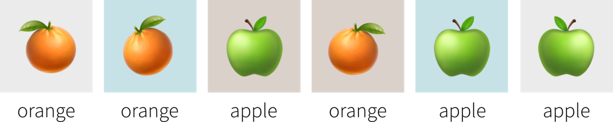

Warum dieses Buch?
Es gibt viele Ressourcen fr Machine Learning (ML; zu Deutsch “maschinelles Lernen”). Die meisten richten sich entweder an Studenten oder Forscher und sind sehr mathelastig, whrend andere in Form von Tutorials die konkrete Implementierung und Anwendung spezieller ML Algorithmen zur Lsung eines bestimmten Problems beschreiben. Dieses Buch versucht, einen Mittelweg zu finden zwischen dem theoretischen Hintergrund, den ich whrend meiner Promotion im Bereich Machine Learning an der TU Berlin vertieft habe, und der praktischen Anwendung dieser Algorithmen zur Lsung unterschiedlicher Probleme, was ich in den letzten Jahren als Data Science Beraterin fr verschiedene Firmen getan habe. Dieses Buches entstand aus meiner Erfahrung mit dutzenden von Seminaren und Workshops zum maschinellen Lernen vor Publikum mit unterschiedlichem technischen und mathematischen Hintergrund.

Fragen, die dieses Buch beantwortet:
-
Welche Probleme kann Machine Learning (ML) lsen?
-
Wie lst ML diese Probleme, d.h. wie funktionieren die Algorithmen?
-
Was sind hufige Fallstricke in der Praxis und wie vermeidet man diese?
Dieses Buch erklrt nicht die neuesten ausgefallenen neuronalen Netzwerkmodelle, die bei einer bestimmten Aufgabe eine state-of-the-art Performance erreichen. Es soll vielmehr ein grundlegendes Verstndnis fr die Ideen hinter den verschiedenen ML Algorithmen vermitteln, um ein solides Fundament zu schaffen und somit einen Rahmen vorzugeben, in den weiteres Wissen integriert werden kann.
Dieses Buch und die dazugehrigen Kurse gibt es in zwei Versionen:
Diese Kurzfassung richtet sich an interessierte Leser, die verstehen wollen, was hinter dem Hype steckt und wo ML eingesetzt werden kann — oder besser nicht eingesetzt werden sollte. Die Vollversion ist hauptschlich fr ML-Anwender geschrieben und setzt voraus, dass der Leser mit elementaren Konzepten der linearen Algebra vertraut ist (siehe auch: bersicht zur mathematischen Notation).
Dieses Manuskript ist noch in Arbeit! Ich freue mich sehr ber Verbesserungsvorschlge per Email oder Feedback-Formular!
Viel Spa! :-)
- Danksagungen
-
Ich mchte mich bedanken bei: Antje Relitz, fr ihr Feedback und ihre Beitrge zu den original Workshop-Materialien, Robin Horn fr sein Feedback und seine Hilfe bei der bersetzung des Buchs ins Deutsche, Karin Zink fr ihre Hilfe bei einigen Grafiken (inkl. dem Buchcover) und meinen Eltern frs Korrekturlesen.
- Zitieren
@misc{horn2021mlpractitioner,
author = {Horn, Franziska},
title = {A Practitioner's Guide to Machine Learning},
year = {2021},
url = {https://franziskahorn.de/mlbook/},
}
Einleitung
Dieses Kapitel illustriert mit verschiedenen motivierenden Beispiele den Aufstieg von Machine Learning (ML).
ML ist berall!
Maschinelles Lernen wird bereits berall um uns herum verwendet, um unser Leben bequemer zu machen:
Objekterkennung (z.B. fr autonomes Fahren)
Ein weiteres Beispiel aus dem Bereich Computer Vision ist die Objekterkennung oder die Bildsegmentierung im Allgemeinen. Dies wird beispielsweise in selbstfahrenden Autos verwendet, um sicherzustellen, dass Straenschilder und Fugnger erkannt werden.

Sprachassistenten (oder genau genommen: Spracherkennung…)
Genug zu Computer Vision; nun ein Beispiel aus dem Bereich Natural Language Processing (NLP; “Verarbeitung natrlicher Sprache”): Sprachassistenten, wie Siri oder Alexa, warten bei vielen Menschen zu Hause auf Befehle. Whrend einige der Antworten, die sie geben, noch von Menschen geschrieben wurden (wie im Screenshot unten), besteht die eigentliche Herausforderung darin, zu verstehen, was die Person tatschlich sagt. Die Spracherkennung, also das automatische Transkribieren gesprochener Sprache in Text, ist ein ziemlich schwieriges Problem, da Menschen z.B. in verschiedenen Dialekten sprechen und zustzliche Hintergrundgerusche auftreten knnen.

Maschinelle bersetzung
Nochmal aus dem Bereich NLP: Maschinelle bersetzung, also das automatische bersetzen von Texten in eine andere Sprache.
Falls du Google Translate (als Beispiel im Screenshot unten gezeigt) kurz nach seiner Erscheinung 2006 verwendet hast, warst du wahrscheinlich meistens ziemlich enttuscht von den Ergebnissen. Die bersetzungen klangen so als htte jemand die Wrter nur nacheinander in einem Wrterbuch nachgeschlagen (= statistische maschinelle bersetzung). Dies nderte sich 10 Jahre spter im Jahr 2016 als Google anfing, die bersetzungen mit einem neuronalen Netzmodell zu generieren: Jetzt sind die bersetzten Texte tatschlich lesbar und erfordern in der Regel nur noch geringfgige manuelle Korrekturen, wenn berhaupt.

Empfehlungssysteme (Recommender Systems)
Ein weiteres ML-Anwendungsgebiet sind Empfehlungssysteme, z.B. auf E-Commerce-Plattformen wie Amazon (siehe Screenshot unten), die dem Nutzer (idealerweise) hilfreiche Suchergebnisse und Vorschlge liefern, wodurch die jeweiligen Unternehmen wiederum Umstze generieren. Auch Social Media Plattformen, Netflix, YouTube & Co fesseln ihre Nutzer damit lnger an den Bildschirm.
Manchmal helfen die generierten Vorschlge dem Nutzer genau das zu finden, wonach er gesucht hat. Aber insbesondere Plattformen mit nicht-kuratierten Inhalten wie YouTube wurden in der Vergangenheit kritisiert, da sie durch personalisierte Empfehlungen unter anderem die Verbreitung von Verschwrungstheorien frderten. Da diese Art von Inhalten ein besonderes Suchtpotential haben, wurden sie hufiger empfohlen und trieben die Nutzer dadurch weiter in den postfaktischen Sumpf, anstatt auch Perspektiven auerhalb der eigenen Informationsblase anzubieten.
Auf der anderen Seite hat die Erforschung von Empfehlungssystemen aber auch Entwicklungen in anderen Wissenschaftsbereichen beflgelt. Zum Beispiel kann die Suche nach Heilmitteln fr Krankheiten beschleunigt werden, indem Wirkstoffmolekle empfohlen werden, die zu den Proteinen passen, die eine Schlsselrolle in der Krankheit spielen.

Besser als der Mensch: AlphaGo
Im Jahr 2016 prsentierte DeepMind, ein spter von Google bernommenes Startup, AlphaGo, das erste Computerprogramm, das einen menschlichen Go-Meister besiegte.
Dies war ein groer Meilenstein fr die KI-Forschungsgemeinschaft. Go ist mit einem Spielfeld von 19 x 19 Feldern viel komplexer als Schach (8 x 8 Felder und restriktivere Bewegungsmuster) und selbst die optimistischsten KI-Forscher hatten nicht erwartet, dass ein Computer vor 2020 gegen einen Go-Meister gewinnen knnte.
Die in AlphaGo verwendeten Algorithmen stammen aus dem Teilgebiet des Reinforcement Learning, auf das wir spter noch genauer eingehen.

Proteinfaltung ein 50 Jahre altes Problem ist gelst
Im Jahr 2020 konnte DeepMind eine weitere Erfolgsgeschichte erzhlen: Ihr AlphaFold-Modell kann die 3D-Struktur von Proteinen aus ihrer ursprnglichen Aminosuresequenz bestimmen — und zwar genauso akkurat wie traditionelle Simulationsmodelle.
Proteine spielen oft eine Schlsselrolle in Krankheiten. Kennt man die 3D-Struktur eines Proteins, kann man bestimmen, welche Wirkstoffmolekle an dieses Protein binden knnen. Dadurch knnen Zielstrukturen identifiziert werden, die weiter untersucht werden sollten, um ein Heilmittel fr die entsprechende Krankheit zu finden.
Zwar gab es die exakten Simulationsmodelle zur Berechnung der 3D-Struktur eines Proteins schon lnger, diese waren jedoch sehr langsam und es dauerte oft mehrere Tage, um die Faltung eines einzelnen Proteins zu berechnen. Mit dem neuen neuronalen Netzmodell kann dieselbe Berechnung jetzt in Minuten oder sogar Sekunden durchgefhrt werden, wodurch die Medikamentenentwicklung enorm beschleunigt wurde.

Neuronale Netze werden kreativ
Viele unterhaltsame Anwendungen verwenden neuronale Netze, um neue Inhalte zu generieren, d.h. kreative Ttigkeiten auszufhren, die bisher ausschlielich den Menschen vorbehalten schienen.
Zum Beispiel hat eine KI ein etwas verwirrendes, aber urkomisches Skript fr einen Film geschrieben, der dann sogar produziert wurde.
Neuronale Netze auch verwendet, um Musik zu visualisieren. Dabei werden passende Bilder kombiniert und flieend transformiert wie in diesem Video:
Und du hast wahrscheinlich auch schon einige Beispiele fr “Neural Style Transfer” gesehen, eine Technik mit der man z.B. ein Social-Media-Profilbild wie ein Van-Gogh-Gemlde aussehen lassen kann:

Auch Stock-Fotos sind nun im Grunde obsolet, da man mit Hilfe neuronaler Netze Bilder aus einer Textbeschreibung generieren kann:

Und Chatbots knnen Gesprche fhren und Informationen in verschiedenen Formen wiedergeben:

ML Geschichte: Warum jetzt?
Warum gibt es einen solchen Anstieg von ML Anwendungen? Allgegenwrtig ist ML nicht nur in unserem Alltag, auch die Zahl der jhrlich verffentlichten Forschungsarbeiten zu dem Thema ist exponentiell gestiegen:
Interessanterweise liegt das aber nicht etwa an einer Flle bahnbrechender theoretischer Errungenschaften in den letzten Jahren (in der Grafik als violette Rauten gekennzeichnet). Im Gegenteil: Viele der heute verwendeten Algorithmen wurden bereits Ende der 50er / Anfang der 60er Jahre entwickelt. So ist beispielsweise das Perzeptron der Vorlufer von neuronalen Netzen, die hinter allen im letzten Abschnitt gezeigten Beispielen stecken. Die wichtigsten neuronalen Netzarchitekturen, Recurrent Neural Networks (RNN, “rekurrente neuronale Netze”) und Convolutional Neural Networks (CNN, “faltende neuronale Netze”), welche die Grundlage fr moderne Sprach- bzw. Bildverarbeitung bilden, wurden in den frhen 80er und 90er Jahren entwickelt. Aber zu dieser Zeit hatten wir noch nicht die Rechenressourcen, um diese Modelle fr mehr als kleine Experimente zu verwenden.
Aufgrund dessen korreliert der Anstieg der ML-Publikationen strker mit der Anzahl der Transistoren auf CPUs (also den regulren Prozessoren in normalen Computern) und GPUs (Grafikkarten, die die Arten von Berechnungen parallelisieren, die zum effizienten Trainieren von neuronalen Netzwerkmodellen erforderlich sind):

Darber hinaus hat die Verffentlichung vieler Open-Source-Bibliotheken wie scikit-learn (fr traditionelle ML-Modelle) und theano, tensorflow und (py)torch (fr die Implementierung neuronaler Netze) die Verwendung von ML-Algorithmen in anderen Fachbereichen deutlich erleichtert.
| Einerseits demokratisieren solche Bibliotheken die Verwendung von ML, andererseits resultiert eine Nutzung ohne Wissen ber die theoretischen Grundlagen auch in Fehlanwendungen. Die Modelle zeigen dann oft nicht die erwartete Performance, was zu (deplatzierter) Enttuschung fhrt. Im ungnstigsten Fall kann es passieren, dass die Modelle bestimmte Teile der Bevlkerung diskriminieren, z.B. Kreditbewertungsalgorithmen, die von Banken verwendet werden und die aufgrund von Verzerrungen in den historischen Daten Frauen systematisch Kredite zu hheren Zinsstzen anbieten als Mnnern. Wir werden solche Probleme im Kapitel zur Vermeidung hufiger Fehler besprechen. |
Ein weiterer Faktor, der zur Verbreitung von ML beitrgt, ist die Verfgbarkeit von (digitalen) Daten. Unternehmen wie Google, Amazon und Meta hatten hier einen Vorsprung, da ihr Geschftsmodell von Anfang an auf Daten aufgebaute. Andere Unternehmen holen inzwischen langsam auf. Whrend traditionelle ML-Modelle nur minimal von diesen verfgbaren Daten profitieren, knnen groe neuronale Netzmodelle mit vielen Freiheitsgraden jetzt ihr volles Potenzial entfalten, indem sie aus all den Texten und Bildern lernen, die tglich im Internet verffentlicht werden:

Aber wir sind nach wie vor noch weit von Artificial General Intelligence (AGI, “knstliche allgemeine Intelligenz” oder “starke KI”) entfernt!

Eine AGI ist ein hypothetisches Computersystem mit menschenhnlichen kognitiven Fhigkeiten, das in der Lage wre, ein breites Spektrum von Aufgaben in verschiedenen Bereichen zu verstehen, zu lernen und auszufhren. Speziell wrde eine AGI nicht nur bestimmte Aufgaben ausfhren, sondern auch ihre Umgebung verstehen und daraus lernen, autonom Entscheidungen treffen und ihr Wissen auf vollkommen neue Situationen verallgemeinern.
In der Praxis wird stattdessen Artificial Narrow Intelligence (ANI, auch “schwache KI”) verwendet: Modelle, die explizit programmiert wurden, um eine bestimmte Aufgabe zu lsen, z.B. Texte von einer Sprache in eine andere bersetzen. Diese Modelle knnen nicht (eigenstndig) verallgemeinern und neue Aufgaben lernen, sprich das maschinelle bersetzungsmodell wird nicht morgen auf die Idee kommen, dass es nun auch Gesichter in Bildern erkennen will. Natrlich kann man mehrere einzelne ANIs in einem groen Programm kombinieren, um so mehrere verschiedene Aufgaben zu lsen, aber auch diese Sammlung von ANIs ist nicht in der Lage, selbststndig neue Fhigkeiten darber hinaus zu erlernen.
Viele KI-Forscher sind derzeit berzeugt, dass wir zumindest mit den aktuell verwendeten Methoden (z.B. den Large Language Models (LLMs) wie ChatGPT von OpenAI) wahrscheinlich nie eine echte menschenhnliche AGI erschaffen werden. Speziell mangelt es diesen KI-Systemen noch immer an einem allgemeinen Verstndnis von Kausalitt und physikalischen Gesetzen wie der Objektpermanenz — etwas, das sogar viele Haustiere verstehen.
Wenn du mehr ber die Mngel aktueller KI-Systeme erfahren mchtest, sind die Blogartikel von Gary Marcus sehr zu empfehlen!
Grundlagen
Dieses Kapitel gibt eine allgemeine Einfhrung in das Thema Machine Learning (ML) und zeigt auf in welchen Bereichen der Einsatz von ML sinnvoll ist und welche Probleme man lieber mit einfacheren Mitteln lsen sollte.
Daten sind das neue l!?
Lass uns von vorne anfangen. Alles beginnt mit Daten.
Wahrscheinlich hast du diese Behauptung schon einmal gehrt: “Daten sind das neue l!”. Dies legt nahe, dass Daten wertvoll sind. Aber sind sie das?
Der Grund, warum l als wertvoll angesehen wird, liegt darin, dass wir wichtige Anwendungsflle dafr haben: den Antrieb unserer Autos, die Beheizung unserer Huser und die Herstellung von Kunststoffen oder Dngemitteln.
Genauso verhlt es sich auch mit Daten: sie sind nur so wertvoll wie das was wir aus ihnen machen. Wofr knnen wir also Daten verwenden?
Die wichtigsten Anwendungsflle fallen in eine von zwei Kategorien:
Insights
Erkenntnisse knnen wir entweder durch kontinuierliches Monitoring (“Sind wir auf Kurs?”) oder eine tiefere Analyse (“Was luft falsch?”) generieren.
In dem wir wichtige Variablen oder Key Performance Indicators (KPIs) in Berichten oder Dashboards visualisieren, machen wir den Status Quo transparenter und quantifizieren wie nah wir einem bestimmten Ziel schon gekommen sind. Wenn ein KPI weit ab von seinem Zielwert liegt, knnen wir mit einer explorativen Datenanalyse tiefer in die Daten eintauchen, um die Ursache des Problems zu identifizieren und Fragen wie diese zu beantworten:
-
Warum erreichen wir unser Ziel nicht?
-
Was sollen wir als nchstes tun?
Zufriedenstellende Antworten zu finden ist allerdings oft mehr Kunst als Wissenschaft — mehr dazu im Kapitel Datenanalyse.
Automatisierung
Wie in den folgenden Unterkapiteln beschrieben, knnen Machine Learning Modelle dazu verwendet werden, um eine ‘Input → Output’ Aufgabe zu automatisieren, welche sonst ein (speziell geschulter) Mensch erledigen msste. Diese Aufgaben fallen einem (entsprechend geschulten) Menschen in der Regel leicht:
-
bersetzen von Texten von einer Sprache in eine andere
-
Produkte mit Kratzern aussortieren, wenn sie einen Kontrollpunkt am Flieband passieren
-
Einem Freund Filme empfehlen
Die ML-Modelle mssen dafr mit einer groen Menge historischer Daten trainiert werden (z.B. Texte in beiden Sprachen, Bilder von Produkten mit und ohne Kratzer, Informationen ber verschiedene Nutzer und welche Filme sie gesehen haben).
Die resultierende Software kann dann entweder verwendet werden, um die Aufgabe vollstndig zu automatisieren, oder wir knnen einen Menschen dazwischen schalten, der eingreifen und die Vorschlge des Modells korrigieren kann.
Was ist ML?
Was genau ist nun dieses maschinelle Lernen, das bereits unser aller Leben verndert?
ML ist zunchst ein Forschungsgebiet im Bereich der theoretischen Informatik, an der Schnittstelle von Mathematik und Informatik:

Genauer gesagt ist maschinelles Lernen ein berbegriff fr Algorithmen, die Muster erkennen und Regeln aus Daten lernen.
| Vereinfacht kann man sich einen Algorithmus als Strategie oder Rezept zur Lsung eines speziellen Problems vorstellen. Es gibt zum Beispiel effektive Algorithmen, um den krzesten Weg zwischen zwei Stdten zu finden (z.B. genutzt in den Navigationssystemen von Google Maps) oder um Planungsprobleme zu lsen wie z.B.: “Welche Aufgabe sollte zuerst erledigt werden und welche Aufgabe danach um alle Aufgaben vor ihrer Deadline zu schaffen unter Bercksichtigung eventueller Abhngigkeiten zwischen den Aufgaben.” Maschinelles Lernen befasst sich mit der Teilmenge von Algorithmen, die statistische Regelmigkeiten in einem Datensatz erkennen und nutzen, um bestimmte Ergebnisse zu erzielen. |
Analog zu den Werkzeugen, mit denen man etwas in einem traditionellen Produktionsprozess herstellt, kann man sich ML-Algorithmen als Werkzeuge vorstellen, um Wert aus Daten zu generieren:

Um ML erfolgreich anzuwenden, sollte man sich einige wichtige Fragen stellen:
-
Was knnte wertvoll sein? Dies kann beispielsweise ein neues Feature fr ein existierendes Produkt sein, z.B. Face ID als neue Mglichkeit um ein Smartphone zu entsperren.
-
Welche Daten werden bentigt? Einen Holzstuhl kann man nicht aus Stoff und Metall oder ein paar im Wald gefundenen Zweigen herstellen. Genauso bentigt man je nachdem, was man mit ML erreichen mchte, auch die richtigen Daten in ausreichender Qualitt & Quantitt um die Algorithmen berhaupt anwenden zu knnen. In vielen Anwendungsfllen ist dieser Teil besonders schwierig, da man die bentigten Daten oft nicht einfach kaufen kann, wie Holz im Baumarkt, sondern diese selbst sammeln — also quasi einen eigenen Wald anpflanzen muss, was einige Zeit dauern kann.
-
Welcher ML-Algorithmus ist das richtige Werkzeug fr diese Aufgabe? (Welche Kategorie von ML-Algorithmen generiert die Art von Output, die wir bentigen?)
-
Verfge ich bzw. meine Mitarbeiter ber die notwendigen Fhigkeiten und gengend Rechenleistung, um das Vorhaben erfolgreich umzusetzen?
Die unterschiedlichen Algorithmen bilden unseren ML Werkzeugkasten:

- ML Algorithmen lsen “Input → Output” Probleme
-
All diesen ML-Algorithmen aus unserem Werkzeugkasten ist gemein, dass sie “Input → Output” Probleme wie diese lsen:

Whrend in den obigen Beispielen ein (entsprechend geschulter) Mensch zur jeweiligen Eingabe in der Regel leicht die richtige Ausgabe erzeugt (z.B. kann sogar ein kleines Kind die Katze im ersten Bild erkennen), fllt es Menschen oft schwer zu beschreiben, wie sie zur richtigen Antwort gekommen sind (woran erkennt man, dass dies eine Katze und kein kleiner Hund ist? an den spitzen Ohren? den Schnurrhaaren?). Im Gegensatz dazu lernen ML-Algorithmen solche Regeln aus den gegebenen Beispieldaten.
ML vs. herkmmliche Software
Whrend man herkmmliche Software-Lsungen dazu verwenden kann, um Aufgaben zu automatisieren, bei denen eine vordefinierte Abfolge von Aktionen nach einigen festgeschriebenen Regeln ausgefhrt wird (z.B. “Eine Tr soll sich ffnen, wenn ein Objekt eine Lichtschranke durchquert und sich 20 Sekunden spter wieder schlieen”), kann man mit maschinellem Lernen “Input → Output”-Aufgaben automatisieren, fr die es sonst schwierig wre, solche Regeln aufzustellen.
Die Qualittskontrolle in einer Keks-Fabrik ist ein Beispiel fr eine solche “Input (Keks) → Output (ok/fehlerhaft)”-Aufgabe: Whrend z.B. zerbrochene Kekse automatisch aussortiert werden knnten, indem man berprft, dass jeder Keks etwa 15g wiegt, ist es schwierig, Regeln zu formulieren, die alle mglichen Produktionsfehler zuverlssig abfangen. Also msste entweder ein Mensch die Produktionslinie beobachten, um z.B. zustzlich verbrannte Kekse zu erkennen, oder man knnte Bilder von den Keksen machen und sie als Input fr ein Machine Learning Modell verwenden, um die fehlerhaften Kekse zu erkennen:

Um dieses Problem mit ML zu lsen, muss zunchst ein groer Datensatz mit Fotos vieler guter, aber auch allerlei fehlerhafter Kekse zusammengestellt werden, inklusive der entsprechenden Annotationen, also einem Label fr jedes Bild, ob es einen guten oder fehlerhaften Keks zeigt (aber nicht unbedingt die Art des Fehlers). Aus diesen Beispielen kann dann ein ML-Algorithmus lernen, zwischen guten und fehlerhaften Keksen zu unterscheiden.
- Schritte zur Identifizierung eines potenziellen ML-Projekts
-
Erstelle ein Prozessdiagramm: Welche Schritte werden in einem Geschftsprozess ausgefhrt und welche Daten werden wo gesammelt (Material- & Informationsfluss). Zum Beispiel in einem Produktionsprozess, bei dem einige der produzierten Teile fehlerhaft sind:

-
Identifiziere Teile des Prozesses, die entweder mit ML automatisiert werden knnten (z.B. einfache, sich wiederholende Aufgaben, die sonst von Menschen erledigt werden) oder die auf andere Weise durch eine Analyse von Daten verbessert werden knnten (z.B. um die Ursachen eines Problems zu verstehen, die Planung mit Was-wre-wenn-Simulationen zu verbessern, oder die Ressourcennutzung zu optimieren):
 Die erste Idee besteht darin, die bisher von einem Menschen durchgefhrte Qualittsprfung zu automatisieren: Da der Mensch die Defekte in den aufgenommenen Produktbildern leicht erkennen kann, sollte ein ML-Modell dies auch schaffen. Die nchste Idee besteht darin, anhand der Zusammensetzung der Rohstoffe und der gegebenen Prozessbedingungen vor der Herstellung vorherzusagen, ob ein Produkt fehlerhaft sein wird oder nicht: Der Erfolg ist hier unklar, da eine menschliche Expertin nicht von vorne herein abschtzen kann, ob alle relevanten Informationen dafr in diesen Daten enthalten sind. Aber dennoch wre es einen Versuch wert, da man dadurch viele Ressourcen sparen knnte. Whrend das endgltige ML-Modell, welches das Input-Output-Problem lst, als Software im laufenden Betrieb eingesetzt werden kann, kann ein Data Scientist zustzlich die Ergebnisse analysieren und das Modell interpretieren und somit Erkenntnisse gewinnen und Handlungsempfehlungen aussprechen.
Die erste Idee besteht darin, die bisher von einem Menschen durchgefhrte Qualittsprfung zu automatisieren: Da der Mensch die Defekte in den aufgenommenen Produktbildern leicht erkennen kann, sollte ein ML-Modell dies auch schaffen. Die nchste Idee besteht darin, anhand der Zusammensetzung der Rohstoffe und der gegebenen Prozessbedingungen vor der Herstellung vorherzusagen, ob ein Produkt fehlerhaft sein wird oder nicht: Der Erfolg ist hier unklar, da eine menschliche Expertin nicht von vorne herein abschtzen kann, ob alle relevanten Informationen dafr in diesen Daten enthalten sind. Aber dennoch wre es einen Versuch wert, da man dadurch viele Ressourcen sparen knnte. Whrend das endgltige ML-Modell, welches das Input-Output-Problem lst, als Software im laufenden Betrieb eingesetzt werden kann, kann ein Data Scientist zustzlich die Ergebnisse analysieren und das Modell interpretieren und somit Erkenntnisse gewinnen und Handlungsempfehlungen aussprechen. -
Priorisieren: Welches Projekt htte eine groe Wirkung und gleichzeitig gute Erfolgsaussichten, htte also einen hohen Return on Investment (ROI)? Als Beispiel: Die Verwendung von ML zur Automatisierung einer einfachen Aufgabe ist aus technischer Sicht eine vergleichsweise risikoarme Investition, kann jedoch dazu fhren, dass einige Fliebandarbeiter ihre Jobs verlieren. Andererseits knnten durch die Ermittlung der Ursachen, warum in einem Produktionsprozess 10% Ausschuss produziert werden, Millionen eingespart werden. Allerdings ist nicht vorhersehbar, ob eine solche Analyse tatschlich ntzliche Ergebnisse liefert, da die gesammelten Daten zu den Prozessbedingungen mglicherweise nicht alle erforderlichen Informationen enthalten.
Wie “lernen” Maschinen?
Wie lsen ML-Algorithmen diese “Input → Output” Probleme, also wie erkennen sie Muster und lernen Regeln aus Daten?
ML-Algorithmen lassen sich nach ihrer Funktionsweise, d.h. wie sie lernen, weiter unterteilen. Diese Unterteilung ist inspiriert von der Art und Weise wie Menschen lernen:
Analog dazu knnen auch Maschinen nach diesen drei Strategien lernen:
- Daten-Voraussetzungen fr das Lernen mit diesen Strategien:
-
-
Unsupervised Learning: ein Datensatz mit Beispielen

-
Supervised Learning: ein Datensatz mit gelabelten Beispielen
 -
Reinforcement Learning: eine (Simulations-) Umgebung, die, basierend auf den Aktionen des Agenten, Daten (Belohnung + neue Zustnde) generiert

Aufgrund der Abhngigkeit von einer datenerzeugenden Umgebung ist Reinforcement Learning ein Sonderfall. Auerdem ist es derzeit noch sehr schwer, Reinforcement Learning Algorithmen zum Laufen zu bringen, weshalb sie hauptschlich in der Forschung und weniger fr praktische Anwendungen verwendet werden.
-
Supervised Learning
Supervised Learning ist die verbreitetste Art des maschinellen Lernens in heutigen Anwendungen.
Beim Supervised Learning mchten wir ein Modell (= eine mathematische Funktion) \(f(x)\) lernen, um den Zusammenhang zwischen einem oder mehreren Input(s) \(x\) (z.B. Produktionsbedingungen wie Temperatur, Material, etc.) und einem Output \(y\) (z.B. resultierende Produktqualitt) zu beschreiben.
Dieses Modell kann dann verwendet werden, um Vorhersagen fr neue Datenpunkte zu machen, also \(f(x') = y'\) fr ein neues \(x'\) zu berechnen (z.B. fr einen neuen Satz von Produktionsbedingungen vorhersagen, ob das Produkt von hoher Qualitt sein wird, oder ob man den Vorgang lieber gleich abbrechen sollte).
- Supervised Learning — kurz und knapp:
-
 Zuerst muss man sich darber im Klaren sein, was vorhergesagt werden soll und inwiefern einem die Vorhersage hilft, das eigentliche Ziel zu erreichen und Mehrwert generiert. Auerdem muss man sich berlegen, wie man den Erfolg misst, d.h. den Key Performance Indicator (KPI) des Prozesses bestimmen. Anschlieend muss man Trainingsdaten sammeln. Da wir hier im Bereich des Supervised Learnings sind, mssen dies gelabelte Daten sein, also inkl. der Zielvariable, die man vorhersagen mchte. Dann “lernt” (oder “trainiert” oder “fittet”) man ein Modell auf diesen Daten um schlielich Vorhersagen fr neue Datenpunkte zu generieren.
Zuerst muss man sich darber im Klaren sein, was vorhergesagt werden soll und inwiefern einem die Vorhersage hilft, das eigentliche Ziel zu erreichen und Mehrwert generiert. Auerdem muss man sich berlegen, wie man den Erfolg misst, d.h. den Key Performance Indicator (KPI) des Prozesses bestimmen. Anschlieend muss man Trainingsdaten sammeln. Da wir hier im Bereich des Supervised Learnings sind, mssen dies gelabelte Daten sein, also inkl. der Zielvariable, die man vorhersagen mchte. Dann “lernt” (oder “trainiert” oder “fittet”) man ein Modell auf diesen Daten um schlielich Vorhersagen fr neue Datenpunkte zu generieren.
Features & Labels
Ein typisches Supervised Learning Problem wre beispielsweise ein Produktionsprozess, bei dem wir vorhersagen mchten, ob ein unter bestimmten Produktionsbedingungen produziertes Teil Ausschuss ist. Hier beinhalten die gesammelten Daten fr jedes produzierte Teil die Prozessbedingungen, unter denen es hergestellt wurde, und ob das resultierende Produkt in Ordnung oder Ausschuss war:


Im Supervised Learning werden die Features als Input (Eingabe) fr das Modell verwendet, whrend die Labels die Zielvariable, d.h. der vorhergesagte Output (Ausgabe) darstellen. Im Allgemeinen sollten Features unabhngige Variablen sein (z.B. Einstellungen, die der Bediener nach Belieben whlen kann), whrend der Zielwert von diesen Eingaben abhngig sein sollte, damit wir ihn vorhersagen knnen.
Ein Modell aus Daten “lernen”
Ziel: Beschreibe den Zusammenhang zwischen Input(s) \(x\) und Output \(y\) mit einem Modell, d.h. einer mathematischen Funktion \(f(x)\)

-
Whle eine Modell Klasse (= Struktur der Funktion): Annahme: Zusammenhang ist linear
→ lineares Regressionsmodell: \(y = f(x) = b + w\cdot x\) -
Definiere die Zielfunktion: Minimiere die Abweichung zwischen echtem & vorhergesagtem \(y\):
→ \(\min_{b,w} \sum_i (y_i - f(x_i))^2\) -
Finde die besten Modellparameter fr die gegebenen Daten: d.h. lse das in Schritt 2 definierte Optimierungsproblem
⇒ \(f(x) = -2.7 + 5.2x\)
| Video Empfehlung: Wenn dir lineare Regression nichts sagt, findest du hier eine tolle Erklrung von der Google-Mitarbeiterin Cassie Kozyrkov zur Funktionsweise der linearen Regression, des einfachsten Supervised Learning Algorithmus: [Teil 1] [Teil 2] [Teil 3] |
Die existierenden Supervised Learning Algorithmen unterscheiden sich in der Art des \(x \to y\,\) Zusammenhangs, den sie beschreiben knnen (z.B. linear oder nichtlinear) und welche Art von Zielfunktion (auch Fehlerfunktion genannt) sie minimieren. Die Aufgabe eines Data Scientists besteht darin, einen fr den Datensatz passenden Modelltyp auszuwhlen. Den Rest erledigt dann eine Optimierungsmethode, die Parameter fr das Modells findet, welche die Zielfunktion des Modells minimieren, d.h. sodass der Vorhersagefehler des Modells auf den gegebenen Daten so klein wie mglich ist.
| In diesem Buch werden die Begriffe “ML-Algorithmus” und “ML-Modell” meist synonym verwendet. Wenn man es aber genau nimmt, verarbeitet der Algorithmus die gegebenen Daten und lernt die Parameterwerte. Die gefundenen Parameter bestimmen das eigentliche Modell. Ein lineares Regressionsmodell wird beispielsweise durch seine Koeffizienten (d.h. die Parameter des Modells) definiert. Diese werden gefunden, in dem die Schritte des linearen Regressionsalgorithmus befolgt werden, also das Optimierungsproblem auf den gegebenen Daten gelst wird. |
Da geht noch mehr!

- Prdiktive Analyse
-
Mit Supervised Learning Algorithmen knnen wir basierend auf historischen Daten ein Vorhersagemodell generieren, das Prognosen ber zuknftige Szenarien anstellt um uns bei Plannungen zu untersttzen. Beispiel: Verkaufsprognosen verwenden, um Lagerbestnde besser zu planen.
- Interpretation Prdiktiver Modelle
-
Interpretiere das Vorhersagemodell und seine Prognosen, um die zugrundeliegenden Ursache-Wirkung Beziehungen des Prozesses besser zu verstehen.
Beispiel: Gegeben ein Modell, welches die Qualitt eines Produkts aus den Produktionsbedingungen vorhersagt, verstehe welche Faktoren dazu fhren dass Produkte von geringerer Qualitt sind. - Was-wre-wenn Analyse & Optimierung
-
Verwende ein Vorhersagemodell fr eine Was-wre-wenn-Vorhersage, um zu untersuchen, wie ein System auf unterschiedliche Bedingungen reagieren knnte (aber Vorsicht!).
Beispiel: Gegeben ein Modell, welches die verbleibende Lebenszeit fr eine Maschinenkomponente aus den Prozessbedingungen vorhersagt, wie schnell wrde diese Komponente unter anderen Prozessbedingungen verschleien?Wenn wir noch einen Schritt weiter gehen wollen, knnen wir auch automatisch verschiedene Inputs mit dem Vorhersagemodell in einer Optimierungsschleife bewerten, um systematisch optimale Einstellungen zu finden.
Beispiel: Gegeben ein Modell, welches die Qualitt eines Produkts aus den Produktionsbedingungen vorhersagt, bestimme automatisch die besten Produktionseinstellungen fr einen neuen Rohstofftyp.
ML Anwendungsflle
ML-Algorithmen knnen auf Input Daten in verschiedensten Formaten angewendet werden…
- Strukturierte vs. Unstrukturierte Daten
-
Daten knnen in verschiedenen Formaten vorliegen und whrend einige Datentypen evtl. zustzliche Verarbeitungsschritte erfordern, knnen ML-Algorithmen im Prinzip mit jeder Art von Daten arbeiten.
 Die wichtigste Unterscheidung bei der Charakterisierung von Daten liegt zwischen strukturierten Daten, das ist jeder Datensatz, der einzelne Messgren/Variablen/Attribute/Features enthlt, die eindeutige Gren darstellen, und unstrukturierten Daten, die nicht in sinnvolle Variablen unterteilt werden knnen. Z.B. in Bildern “erster Pixel von links” oder in Texten “10. Wort im 2. Absatz” wrden wir nicht Variablen nennen, im Gegensatz zu “Flche in Quadratmetern” oder “Anzahl Schlafzimmern”, womit man sinnvoll eine Wohnung beschreiben knnte. Strukturierte Daten sind oft heterogen, da die verschiedenen Variablen in einem Datensatz typischerweise fr sehr unterschiedliche Dinge stehen. Wenn man beispielsweise mit Sensordaten arbeitet enthlt ein Datensatz nicht nur Temperaturmessungen, sondern zustzlich z.B. Druck und Durchflusswerte, die unterschiedliche Einheiten haben und in sehr unterschiedlichen Skalen gemessen werden knnen. Unstrukturierte Daten hingegen sind homogen, z.B. gibt es keinen qualitativen Unterschied zwischen dem 10. und dem 100. Pixel in einem Bild.
Die wichtigste Unterscheidung bei der Charakterisierung von Daten liegt zwischen strukturierten Daten, das ist jeder Datensatz, der einzelne Messgren/Variablen/Attribute/Features enthlt, die eindeutige Gren darstellen, und unstrukturierten Daten, die nicht in sinnvolle Variablen unterteilt werden knnen. Z.B. in Bildern “erster Pixel von links” oder in Texten “10. Wort im 2. Absatz” wrden wir nicht Variablen nennen, im Gegensatz zu “Flche in Quadratmetern” oder “Anzahl Schlafzimmern”, womit man sinnvoll eine Wohnung beschreiben knnte. Strukturierte Daten sind oft heterogen, da die verschiedenen Variablen in einem Datensatz typischerweise fr sehr unterschiedliche Dinge stehen. Wenn man beispielsweise mit Sensordaten arbeitet enthlt ein Datensatz nicht nur Temperaturmessungen, sondern zustzlich z.B. Druck und Durchflusswerte, die unterschiedliche Einheiten haben und in sehr unterschiedlichen Skalen gemessen werden knnen. Unstrukturierte Daten hingegen sind homogen, z.B. gibt es keinen qualitativen Unterschied zwischen dem 10. und dem 100. Pixel in einem Bild.
…aber unser Ziel, also der gewnschte Output, bestimmt welche Art von Algorithmus wir fr das Problem verwenden sollten:

Einige Beispiele fr Input → Output Aufgaben und welche Art von ML-Algorithmus verwendet werden kann, um sie zu lsen:
| Input \(X\) | Output \(Y\) | ML-Algorithmus Kategorie |
|---|---|---|
Fragebogenantworten |
Kundensegmentierung |
Clustering |
Sensormessungen |
alles normal? |
Anomalieerkennung |
Vergangene Nutzung einer Maschine |
Restlebensdauer |
Regression |
Spam (ja/nein) |
Klassifikation (binr) |
|
Bild |
welches Tier? |
Klassifikation (mehrere Klassen) |
Bisherige Einkufe des Nutzers |
Produktvorschlge |
Empfehlungssysteme |
Suchanfrage |
relevante Dokumente |
Information Retrieval |
Audio |
Text |
Spracherkennung |
Text auf Englisch |
Text auf Franzsisch |
Maschinelle bersetzung |
Zusammengefasst (siehe auch: bersichtstabelle als PDF):
- Existierende ML-Lsungen & entsprechende Outputs (fr einen Datenpunkt):
-
-
Dimensionsreduktion: (normalerweise) 2D-Koordinaten (um den Datensatz zu visualisieren)
-
Ausreier-/Anomalieerkennung: Anomalie-Score (normalerweise ein Wert zwischen 0 und 1, der angibt, inwiefern dieser Punkt von der Norm abweicht)
-
Clustering: Cluster-Index (eine Zahl zwischen 0 und k-1, die angibt, zu welchem der k Cluster ein Datenpunkt gehrt (oder -1 fr Ausreier))
-
Regression: ein kontinuierlicher Wert (eine numerischer Gre, die vorhergesagt werden soll)
-
Klassifikation: ein diskreter Wert (eine von mehreren sich gegenseitig ausschlieenden Kategorien)
-
Generative AI: unstrukturierte Outputs wie Text oder Bild (z.B. Spracherkennung, maschinelle bersetzung, Bild Generierung oder Neural Style Transfer)
-
Empfehlungssysteme & Information Retrieval: Rangliste einer Menge von Elementen (Empfehlungssysteme ordnen beispielsweise die Produkte nach Relevanz fr den jeweiligen Nutzer; Information Retrieval Systeme sortieren Elemente nach ihrer hnlichkeit zu einer gegebenen Suchanfrage)
-
Reinforcement Learning: eine Sequenz von Aktionen (abhngig vom Zustand in dem sich der Agend befindet)
-
Beginnen wir mit einem detaillierteren Blick auf die verschiedenen Unsupervised und Supervised Learning Algorithmen und wie sie uns helfen knnen:

| Auch wenn unser eigentliches Ziel darin besteht, etwas vorherzusagen (also Supervised Learning zu verwenden), kann es dennoch sehr hilfreich sein, zunchst Unsupervised Learning Algorithmen anzuwenden, um den Datensatz besser zu verstehen. Beispielsweise kann man die Daten im Vorfeld mit Dimensionsreduktionsmethoden visualisieren, um alle Datenpunkte und ihre Vielfalt auf einen Blick zu sehen. Anschlieend kann man den Datensatz bereinigen, in dem man Ausreier identifiziert. Bei einem Klassifikationsproblem ist es hufig sinnvoll, die Datenpunkte zuerst zu clustern, um zu berprfen, in wie weit die angegebenen Klassenlabels mit den natrlich vorkommenden Gruppen in den Daten bereinstimmen. Beispielsweise sieht man dann vielleicht, dass man das Problem vereinfachen kann, in dem man zwei sehr hnliche Klassen kombiniert. |
Dimensionsreduktion
-
Erstellen einer 2D-Visualisierung, um den Datensatz im Ganzen zu berblicken, wobei wir oft bereits beim Draufschauen Muster identifizieren knnen, wie Datenpunkte, die zusammen gruppiert werden knnen (Cluster) oder die nicht ins Bild passen (Ausreier)
-
Rauschunterdrckung und/oder Feature-Engineering als Datenvorverarbeitungsschritt zur Verbesserung der Ergebnisse eines Vorhersagemodells
- Beispiel Unsupervised Learning: Dimensionsreduktion
-
Ziel: Datensatz visualisieren

-
die Transformation der Daten mit Dimensionsreduktionsmethoden konstruiert neue Features als (nicht)lineare Kombination der ursprnglichen Features, was die Interpretation der nachfolgenden Analyseergebnisse erschwert
Anomalieerkennung
-
Bereinigung der Daten, z.B. durch Entfernen von Datenpunkten mit falsch eingegebenen Werten, als Datenvorverarbeitungsschritt zur Verbesserung der Ergebnisse eines Vorhersagemodells
-
Warnung fr Anomalien einrichten, zum Beispiel:
-
Betrugserkennung: Identifizierung betrgerischer Kreditkartentransaktionen im E-Commerce
-
berwachen einer Maschine, um zu erkennen, wenn etwas Auergewhnliches passiert oder die Maschine mglicherweise gewartet werden muss
-
- Beispiel Unsupervised Learning: Anomalieerkennung
-
Ziel: Ausreier im Datensatz finden

-
du solltest immer einen guten Grund haben, Datenpunkte weg zu lassen Ausreier sind selten zufllig, manchmal sind dies interessante Randflle, die nicht ignoriert werden sollten
Clustering
-
Identifizieren von Gruppen verwandter Datenpunkte, zum Beispiel:
-
Kundensegmentierung fr gezielte Marketingkampagnen
-
- Beispiel Unsupervised Learning: Clustering
-
Ziel: Natrlich vorkommende Gruppen im Datensatz finden

-
keine Ground Truth: Modell- und Parameterselektion nicht trivial → die Algorithmen werden immer etwas finden, aber ob dies sinnvoll ist (d.h. was die identifizierten Muster bedeuten), kann ein Menschen in einem Nachbearbeitungsschritt bestimmen
-
viele der Algorithmen beruhen auf hnlichkeiten oder Distanzen zwischen Datenpunkten, und es kann schwierig sein, dafr ein geeignetes Ma zu definieren oder im Voraus zu wissen, welche Merkmale verglichen werden sollten (z.B. was macht zwei Kunden hnlich?)
Unsupervised Learning hat keine zugrundeliegende Wahrheit
Bei Unsupervised Learning Problemen sollte uns bewusst sein, dass es keine richtigen oder falschen Antworten gibt. Unsupervised Learning Algorithmen erkennen lediglich Muster in den Daten. Das Ergebnis kann fr uns Menschen sinnvoll sein oder auch nicht.
Ein Beispiel: Im Bereich Unsupervised Learning gibt es eine Reihe verschiedener Algorithmen, die Datenpunkte in Cluster gruppieren. Dabei arbeitet jeder Algorithmus nach einer etwas anderen Strategie und bewertet unterschiedlich, ab wann zwei Punkte hnlich genug sind, dass sie in denselben Cluster eingeordnet werden knnen.

Es ist unsere Aufgabe, die Ergebnisse eines Unsupervised Learning Algorithmus zu untersuchen und zu verstehen. Entsprechen die Resultate nicht unseren Erwartungen, spricht nichts dagegen, einen anderen Algorithmus auszuprobieren.
Regression & Klassifikation
-
Lerne ein Modell, um eine Input-Output-Beziehung zu beschreiben und Vorhersagen fr neue Datenpunkte zu treffen, zum Beispiel:
-
vor der Produktion vorhersagen, ob ein unter den vorgeschlagenen Prozessbedingungen hergestelltes Produkt von hoher Qualitt oder Ressourcenverschwendung sein wird
-
Churn Prediction: Erkenne Kunden, die kurz davor stehen, ihren Vertrag zu kndigen (oder Mitarbeiter, die kurz davor stehen zu kndigen), damit du sie kontaktieren und berzeugen kannst zu bleiben
-
Preisoptimierung: Bestimme den optimalen Preis fr ein Produkt (oft fr dynamische Preisgestaltung verwendet, z.B. um Preise basierend auf dem Gert anzupassen, das ein Kunde verwendet, wenn er auf eine Website zugreift, wie z. B. ein neues iPhone gegenber einem alten Android-Handy)
-
Predictive Maintenance: Sage voraus, wie lange ein Maschinenbauteil halten wird
-
Umsatzprognosen: Sag den Umsatz in den kommenden Wochen und den erforderlichen Lagerbestand voraus, um die Nachfrage zu befriedigen
-
- Beispiel Supervised Learning: Klassifikation
-
Ziel: Vorhersage eines diskreten Werts fr jeden Datenpunkt

- Beispiel Supervised Learning: Regression
-
Ziel: Vorhersage eines kontinuierlichen Werts fr jeden Datenpunkt

-
Erfolg ungewiss: die Anwendung der Algorithmen ist zwar relativ einfach, aber es ist schwierig, im Voraus festzustellen, ob berhaupt ein Zusammenhang zwischen den gemessenen Inputs und Outputs besteht (→ Achtung: Garbage in, Garbage out!)
-
angemessene Definition des Ergebnisses/Ziels/KPI, das modelliert werden soll, d.h. was bedeutet es eigentlich, dass ein Prozess gut luft, und wie knnten externe Faktoren diese Definition beeinflussen (knnen wir z.B. die gleiche Leistung in einem auergewhnlich heien Sommertag erwarten?)
-
wichtige Inputs fehlen, z.B. wenn es andere Einflussfaktoren gibt, die wir nicht bercksichtigt haben oder nicht messen konnten, wodurch nicht die gesamte Varianz der Zielgre erklrt werden kann
-
viele mglicherweise irrelevante Inputs, die eine sorgfltige Feature Selektion erfordern, um Scheinkorrelationen zu vermeiden, die zu falschen “Was-wre-wenn”-Prognosen fhren wrden, da die wahre kausale Beziehung zwischen den Inputs und Outputs nicht erfasst wird
-
oft sehr zeitintensive Datenvorverarbeitung notwendig, z.B. bei der Zusammenfhrung von Daten aus unterschiedlichen Quellen und manuellem Feature Engineering
Deep Learning & Generative AI
-
Automatisierung langwieriger, repetitiver Aufgaben, die sonst ein Menschen erledigt wrde, z.B. (siehe auch ML ist berall!):
-
Textklassifizierung (z.B. Spam / Hate Speech / Fake News erkennen; Kundensupportanfragen an die passende Abteilung weiterleiten)
-
Sentimentanalyse (Teilaufgabe der Textklassifikation: Positive oder negative Texte erkennen, z.B. um Produktbewertungen oder das, was Social-Media-Nutzer ber ein Unternehmen sagen, zu berwachen)
-
Spracherkennung (z.B. diktierte Notizen transkribieren oder Videos mit Untertiteln versehen)
-
maschinelle bersetzung (Texte von einer Sprache in eine andere bersetzen)
-
Bildklassifizierung / Objekterkennung (z.B. Identifizierung problematischer Inhalte (wie Kinderpornografie) oder Erkennung von Straenschildern und Fugngern beim autonomen Fahren)
-
Bildbeschreibungen generieren (z.B. um das Online-Erlebnis fr Menschen mit Sehbehinderung zu verbessern)
-
Predictive Typing (z.B. bei der Texteingabe auf dem Smartphone mgliche nchste Wrter vorschlagen)
-
Datengenerierung (z.B. neue Fotos/Bilder von bestimmten Objekten oder Szenen generieren)
-
Style Transfer (ein Bild in einen anderen Stil zeigen, z.B. Fotos wie van Gogh-Gemlde aussehen lassen)
-
einzelne Quellen eines Audiosignals trennen (z.B. einen Song entmischen, d.h. Gesang und Instrumente in einzelne Spuren trennen)
-
-
klassische Simulationsmodelle durch ML Modelle ersetzen: da exakte Simulationsmodelle oft langsam sind, kann die Berechnung fr neue Datenpunkte beschleunigt werden, indem die Ergebnisse stattdessen mit einem ML-Modell vorhergesagt werden, z.B.:
-
AlphaFold: 3D-Proteinstruktur aus Aminosuresequenz generieren (zur Erleichterung der Arzneimittelentwicklung)
-
SchNet: Energie und andere Eigenschaften von Moleklen anhand ihrer Atomkonfiguration vorhersagen (um die Materialforschung zu beschleunigen)
-
-
Auswhlen einer geeigneten neuronalen Netzarchitektur und dafr sorgen, dass das Modell gute Vorhersagen generiert; insbesondere beim Ersetzen traditioneller Simulationsmodelle ist es hufig erforderlich, eine vllig neue Art von neuronaler Netzarchitektur zu entwickeln, die speziell fr diese Aufgabe und Inputs/Outputs ausgelegt ist, was viel ML- und Domnenwissen, Intuition und Kreativitt erfordert
-
Rechenressourcen (trainiere kein neuronales Netz ohne GPU!)
-
Datenqualitt und -quantitt: es werden viele konsistent (von Menschen) gelabelte Daten bentigt
Information Retrieval
-
Verbesserte Suchergebnisse durch Identifizierung hnlicher Artikel, zum Beispiel:
-
bei einer Suchanfrage passende Dokumente / Websites zurckgeben
-
gegeben einem Film, den der Nutzer gerade anschaut, hnliche Filme anzeigen (z.B. gleiches Genre, gleicher Regisseur usw.)
-
-
Qualitt der Ergebnisse hngt stark von der gewhlten hnlichkeitsmetrik ab; die Identifizierung semantisch verwandter Elemente ist derzeit fr einige Datentypen (z.B. Bilder) schwieriger als fr andere (z.B. Text)
Empfehlungssysteme
-
personalisierte Vorschlge: gegeben einer Instanz (z.B. Benutzer, Proteinstruktur) die relevantesten Elemente identifizieren (z.B. Film, Arzneimittelzusammensetzung), zum Beispiel:
-
einem Nutzer Filme vorschlagen, die anderen Nutzern mit hnlichem Geschmack ebenfalls gefallen haben
-
Moleklstrukturen empfehlen, die in eine, fr eine bestimmte Krankheit relevante, Proteinstruktur passen knnte
-
-
wenig / unvollstndige Daten, z.B. mgen verschiedene Nutzer denselben Artikel aus unterschiedlichen Grnden und es ist unklar, ob z.B. ein Nutzer einen Film nicht angesehen hat, weil er sich nicht dafr interessiert oder weil er ihn einfach noch nicht gefunden hat
Reinforcement Learning
-
Ermittlung einer optimalen Handlungsabfolge bei wechselnden Umgebungsbedingungen, z.B.:
-
Virtueller Agent, der ein (Video-)Spiel spielt
-
Roboter mit komplexen Bewegungsmustern, z.B. Aufnehmen unterschiedlich geformter Gegenstnde aus einer Kiste
-
⇒ Anders als bei der regulren Optimierung, wo eine optimale Eingabe fr einen spezifischen externen Zustand bestimmt wird, versucht hier ein “Agent” (= der RL-Algorithmus) eine optimale Reihenfolge von Eingaben zu finden, um die kumulative Belohnung ber mehrere Schritte zu maximieren. Dabei kann zwischen einer Handlung und der dazugehrigen Belohnung eine erhebliche Zeitverzgerung liegen (z.B. wenn in einem Videospiel zu Beginn eines Levels ein Schlssel gefunden werden muss, aber die Tr, die damit geffnet werden kann, erst einige Frames spter kommt).
-
erfordert normalerweise eine Simulationsumgebung, in der der Agent “angelernt” wird, bevor er anfngt, in der realen Welt zu handeln. Die Entwicklung eines exakten Simulationsmodells ist allerdings nicht einfach und der Agent wird alle Bugs ausnutzen, wenn dies zu hheren Belohnungen fhrt
-
es kann schwierig sein, eine klare Belohnungsfunktion zu definieren, die optimiert werden soll (“Imitation Learning” ist dabei oft einfacher, wobei der Agent stattdessen versucht, die Entscheidungen eines Menschen in einer bestimmten Situation nachzuahmen)
-
lange Verzgerungen zwischen kritischen Aktionen und der dazugehrigen Belohnung erschweren das lernen korrekter Assoziationen
-
der Agent generiert seine eigenen Daten: Wenn er mit einer schlechten Policy startet, wird es schwierig, dieser zu entkommen (z.B. wenn der Agent in einem Videospiel immer in eine Lcke fllt, anstatt darber zu springen, sieht er nie die Belohnung, die auf der anderen Seite wartet und lernt daher nicht, dass es von Vorteil wre, ber die Lcke zu springen)
Andere
| ML-Algorithmen werden anhand des Outputs kategorisiert, den sie fr eine Eingabe generieren. Wenn man ein ‘Input → Output’-Problem mit einem anderen als den oben aufgefhrten Outputs lsen mchte, wird das wahrscheinlich auf ein mehrjhriges Forschungsprojekt hinauslaufen — wenn das Problem berhaupt mit ML gelst werden kann! |
Mit ML Probleme lsen
Das Lsen von “Input → Output”-Problemen mit ML erfordert drei Hauptschritte:

1. Identifiziere ein Problem
Der erste (und wohl wichtigste) Schritt besteht darin, zu identifizieren, wo maschinelles Lernen berhaupt eingesetzt werden kann (und sollte).
ML Projekt Checkliste
Motivation
-
Welches Problem mchtest du lsen?
Machine Learning kann dir in verschiedenen Situationen helfen, z.B. indem es Erkenntnisse aus groen Mengen (mglicherweise unstrukturierter) Daten generiert, Entscheidungsfindungs- und Planungsprozesse durch Vorhersagen ber zuknftige Ereignisse verbessert, oder mhsame Aufgaben automatisiert, die sonst menschliche Experten erfordern.
Wo luft etwas ineffizient, was durch eine effektivere Nutzung von Daten verbessert werden knnte? Du knntest zum Beispiel nach Mglichkeiten suchen, verschwendete Ressourcen/Zeit/Kosten zu reduzieren oder den Umsatz/die Kundenzufriedenheit/usw. zu steigern.
Um systematisch Probleme oder Verbesserungsmglichkeiten zu erkennen, kann es auch helfen, ein Prozessdiagramm oder eine Customer Journey Map zu erstellen. -
Auf welche Art und Weise wrde dies Wert fr eure Organisation generieren?
Wie knnte eure Organisation damit Geld verdienen oder Kosten senken?-
Knnte dies einen internen Prozess verbessern (z.B. knnte ein Prozess mit den Erkenntnissen aus einer Analyse effizienter gestaltet werden oder eine lstige Aufgabe, die sonst einen menschlichen Arbeiter erfordern wrde, kann mithilfe eines ML-Modells automatisiert werden)?
-
Knnte das ML-Modell als neues Feature in ein bestehendes Produkt integriert werden und dadurch z.B. dieses Produkt fr Kunden attraktiver machen?
-
Knnte die ML-Lsung als vllig neues Produkt oder Service verkauft werden, z.B. als Software-as-a-Service (SaaS)-Lsung angeboten werden?
Bitte beachte, dass die letztendliche Verwendung der ML-Lsung auch eine strategische Entscheidung sein kann, die fr jede Organisation unterschiedlich sein kann. Beispielsweise knnte eine ML-Lsung, die Kratzer auf produzierten Produkten erkennt, von einem Unternehmen verwendet werden, um ihren internen Produktionsprozess zu verbessern, whrend ein anderes Unternehmen, das die Maschinen herstellt, die die Produkte herstellen, dies als neues Feature in seine Maschinen integrieren knnte, und ein drittes Unternehmen bietet dies mglicherweise als SaaS-Lsung an, die mit verschiedenen Produktionslinien kompatibel ist.
-
-
In welcher Grenordnung knnte dieses Projekt Mehrwerte generieren?
berlege dir den Impact im Hinblick auf-
Grenordnung: Kleine Verbesserung oder Revolution? Wrde die Lsung einen strategischen Vorteil schaffen?
-
Skalierung: Wie oft wird es verwendet? Wie viele Benutzer/Kunden/Mitarbeiter werden davon profitieren?
Zum Beispiel:
-
Kleine Prozessoptimierung, aber da dieser Prozess tglich in der gesamten Organisation verwendet wird, spart dies unzhlige Stunden
-
Neue Funktion, die ein Produkt revolutioniert und euch von der Konkurrenz abhebt, aber der Markt dafr ist winzig
-
-
Htte dies irgendwelche wertvollen Nebenwirkungen? Was wird anders sein? Gibt es zustzliche Mglichkeiten, die sich daraus ergeben knnten? Knnen Synergien geschaffen werden zwischen Abteilungen, die mit hnlichen Daten arbeiten?
-
-
Wann hast du dein Ziel erreicht?
Wie wrde Erfolg aussehen, d.h. was ist deine Definition von ‘fertig’?-
Kannst du den Fortschritt mit einem KPI quantifizieren?
-
Wie ist der Status quo, d.h. wie weit bist du derzeit von deinem Ziel entfernt?
-
Welche Metriken sollten sich nicht verndern (verschlechtern) durch das Projekt?
-
Lsungsansatz
-
Wie sieht deine Vision fr die Zukunft mit ML aus?
-
Wie sieht dein bestehender Prozess / dein bestehendes System aus und was wird nach der Integration der ML-Lsung anders sein?
-
Wer sind die Nutzer und wie werden sie von dieser Vernderung betroffen sein, brauchen sie z.B. zustzliche Schulungen, um das neue System zu nutzen?
-
-
Was sind die Deliverables?
Besteht die Lsung aus einer Software, die irgendwo eingesetzt wird, um kontinuierlich Vorhersagen fr neue Datenpunkte zu generieren, oder interessierst du dich fr die Erkenntnisse, die aus einer einmaligen Analyse historischer Daten gewonnen werden? -
Wie wird im Falle einer Softwarelsung das ML-Modell in das bestehende Setup integriert?
-
Wie sieht eine Interaktion mit dem System aus (= 1 Datenpunkt / Beobachtung), z.B. ein Nutzer, der eine Anfrage stellt oder ein produziertes Produkt, das eine Qualittskontrolle passiert?
-
Von welchem System stammen die Inputs fr das ML-Modell? Was passiert mit den Outputs des ML-Modells?
-
Wird eine zustzliche Benutzeroberflche (UI) oder API bentigt, um mit dem ML-Modell zu interagieren?
-
Muss das ML-Modell Vorhersagen sofort treffen, sobald neue Daten eintreffen, oder kann es Daten asynchron in Batches verarbeiten? Wie hoch ist der erwartete Traffic (d.h. die Anzahl der Datenpunkte, die pro Sekunde verarbeitet werden mssen)?
-
Wie sollte das ML-Modell deployed werden (z.B. Cloud, On-Premise oder Edge-Gert)? Erfordert dies zustzliche Infrastruktur oder spezielle Hardware (z.B. GPUs)?
-
Modellwartung: Was sind die Plne im Hinblick auf Pipelines fr zuknftige Datenerfassung, Modellberwachung und automatisiertes Nachtrainieren?
-
-
Wie sehen die Input Daten aus? Wie sollen die Outputs aussehen?
-
Welche Art von Inputs bekommt das ML Modell (z.B. Bild / Text / Sensormessungen / etc.)?
-
Welche Art von Outputs soll das ML-Modell produzieren, d.h. welche Kategorie von ML-Algorithmen lst dieses Problem?
-
Hast du bereits Zugriff auf einen initialen Datensatz, um das Modell zu trainieren?
-
-
Wie soll die Performance des ML-Modells evaluiert werden?
-
Welche Evaluierungsmetriken sind fr den gegebenen ML-Anwendungsfall geeignet (z.B. Accuracy)?
-
Wie stehen diese Metriken in Zusammenhang mit den Geschfts-KPIs, die durch diese Lsung verbessert werden sollen?
-
Wie kann die Performance des Modells im laufenden Betrieb berwacht werden? Werden dafr kontinuierlich neue gelabelte Daten gesammelt?
-
-
Gibt es eine einfachere Lsung ohne ML?
Verwende ML, um unbekannte, komplexe Regeln aus Daten zu lernen.-
Auch wenn ML hier die richtige Wahl ist, knntest du ein minimal funktionsfhiges Produkt ohne ML entwickeln, um die Lsung als Ganzes zu validieren, bevor du in ML investierst?
-
Herausforderungen & Risiken
-
Gibt es gengend hochwertige Daten um das Modell zu trainieren und zu evaluieren?
-
Qualitt: Hast du die richtigen Inputs und eindeutige Labels?
→ Frage eine Fachexpertin, ob sie denkt, dass alle relevanten Inputs vorhanden sind, um das gewnschte Ergebnis zu berechnen. Dies ist bei unstrukturierten Daten wie Bildern in der Regel leicht zu bestimmen - wenn ein Mensch das Objekt im Bild sehen kann, sollte es ML auch knnen. Aber bei strukturierten Daten, wie z.B. einer Tabelle mit Hunderten von Spalten mit Sensormessungen, kann dies unmglich zu bestimmen sein, bevor man eine Analyse der Daten durchfhrt. -
Quantitt: Wie viele Daten wurden bereits gesammelt (einschlielich seltener Ereignisse und Labels)? Wie lange wrde es dauern, mehr Daten zu sammeln? Knnten zustzliche Daten von einem Anbieter gekauft werden und wenn ja, wie viel wrde das kosten?
-
Wie schwierig ist es, auf alle Daten zuzugreifen und sie ordentlich an einem Ort zu kombinieren? Mit wem wrdest du sprechen, um die Dateninfrastruktur einzurichten/zu verbessern?
-
Wie viel Vorverarbeitung ist notwendig (z.B. Entfernung von Ausreiern, Korrigieren fehlender Werte, Feature Engineering, d.h. Berechnung neuer Variablen aus den bestehenden Messungen, etc.)? Was sollten die nchsten Schritte sein, um die Datenqualitt und -quantitt systematisch zu verbessern und die Vorverarbeitungsanforderungen in Zukunft zu verringern?
-
-
Kann das Problem mit einem existierenden ML-Algorithmus gelst werden?
Frage eine ML-Expertin, ob ein hnliches Problem bereits mit einem bewhrten Algorithmus gelst wurde.-
Fr bekannte Lsungen: Wie komplex ist es, das Modell zum Laufen zu bringen (z.B. lineare Regression vs. tiefes neuronales Netz)?
-
Fr unbekannte Lsungen: Anstatt Jahre in die Forschung zu investieren, um einen neuartigen Algorithmus zu entwickeln, wre es mglich, das Input-Output-Problem in einfachere Teilprobleme mit bekannten Lsungen zu zerlegen?
-
-
Was wrde im schlimmsten Fall passieren, wenn das Modell falsch liegt?
Das ML-System wird (wie Menschen auch) Fehler machen. Benutze kein ML wenn du immer 100% korrekte Ergebnisse brauchst!-
Welches Performance-Level wird mindestens bentigt, damit die ML-Lsung Mehrwert liefert? Z.B. welche Falsch Positiv oder Falsch Negativ Rate wre noch akzeptabel? Was wre das Worst-Case-Szenario und wie viel Risiko bist du bereit einzugehen?
-
Wie wahrscheinlich ist es, dass sich die Inputs im Laufe der Zeit ndern, beispielsweise auf Grund sich ndernder Demographie der Nutzer oder durch unerwartete Ereignisse (Black Swan Events) wie eine Pandemie (z.B. COVID-19)? Wie oft msste man das Modell nachtrainieren, um diese Vernderungen zu kompensieren und werden dafr schnell genug neue (gelabelte) Daten gesammelt?
-
Besteht fr die Nutzer ein Anreiz, das System absichtlich zu tuschen (z.B. entwickeln Spammer raffiniertere Nachrichten, wenn ihre ursprnglichen Nachrichten vom Spamfilter abgefangen werden)?
-
Gibt es eine Mglichkeit, das System erst zu berwachen und trotzdem einen Mehrwert zu generieren (z.B. mit einer “Human in the Loop” Lsung), statt vom ersten Tag an voll auf ML zu setzen?
-
-
Gibt es rechtliche oder ethische Bedenken beim Einsatz der Lsung?
-
Verbietet irgendeine Verordnung, zum Beispiel das EU-Gesetz ber knstliche Intelligenz (EU AI Act), den Einsatz von ML fr diese Anwendung?
-
Gibt es datenschutzrechtliche Bedenken, zum Beispiel weil personenbezogene Daten verwendet werden?
-
Mssen die Entscheidungen des ML-Modells transparent und nachvollziehbar sein, z.B. wenn jemandem aufgrund eines algorithmisch generierten Kreditscores ein Kredit verweigert wird?
-
Besteht die Gefahr, dass das Modell Nutzer diskriminieren knnte, beispielsweise weil es mit verzerrten Daten trainiert wurde?
-
-
Was knnte sonst noch schief gehen?
-
Warum knnten die Nutzer von der Lsung frustriert sein? An welcher Stelle wrden sie z.B. lieber mit einem echten Menschen statt einem Chatbot interagieren?
-

Selbst bauen oder einkaufen?
-
Kernbereich vs. generische Anwendung: Schafft diese Lsung einen strategischen Vorteil?
Wird die Lsung ein wichtiger Bestandteil eures Geschfts sein, z.B. ein neues Feature, das euer Produkt attraktiver macht und/oder erfordert die Lsung spezifisches Domnenwissen, das nur in eurer Organisation verfgbar ist, z.B. weil du Daten analysierst, die von euren eigenen speziellen Prozessen/Maschinen generiert werden? Oder ist dies ein allgemeines (aber komplexes) Problem, fr das es bereits eine Lsung gibt (z.B. als Software-as-a-Service (SaaS)-Produkt), die ihr von der Stange kaufen knntet?
Beispielsweise ist das Extrahieren der relevanten Informationen aus gescannten Rechnungen zur Automatisierung von Buchhaltungsprozessen eine relativ komplexe Aufgabe, fr die es bereits viele gute Lsungen gibt. Wenn du nicht gerade in einem Unternehmen arbeitest, das Buchhaltungssoftware entwickelt, und ihr plant, eine bessere Alternative zu diesen vorhandenen Lsungen zu verkaufen, ist es wahrscheinlich nicht sinnvoll, dies selbst zu implementieren. -
Besitzt ihr die ntige technische Expertise und Wissen im Anwendungsbereich, um die Lsung selbst zu implementieren?
-
Wie schwierig wre es, die ML-Lsung selbst zu implementieren? Welche Open-Source-Bibliotheken gibt es, die eine solche Aufgabe lsen?
-
Verfgt eure Organisation ber das ntige ML-Talent? Falls nicht knnte auch eine hybride Entwicklung zusammen mit einer Universitt oder Forschungsinstitution oder externen Beratern mglich sein.
-
-
Was wre der Return on Investment (ROI) einer eingekauften Lsung?
-
Wie zuverlssig ist die eingekaufte ML-Lsung? Gibt es Benchmarks und/oder knnt ihr sie mit einigen gngigen Beispielen und Randfllen selbst testen?
-
Wie aufwndig wre die Vorverarbeitung eurer Daten um die eingekaufte ML-Lsung zu verwenden?
-
Wie kompliziert wre es, die Outputs der eingekauften ML-Lsung in euer System zu integrieren? Macht diese Lsung genau das, was ihr braucht, oder wren zustzliche Nachbearbeitungsschritte erforderlich?
-
Kann die eingekaufte ML-Lsung intern deployed werden oder luft sie auf einem externen Server und wrde dies Datenschutzprobleme mit sich bringen?
-
Wie hoch sind die laufenden Lizenzgebhren und was ist in der Wartung enthalten (z.B. wie oft werden die Modelle nachtrainiert)?
Sofern die ML-Lsung kein integraler Bestandteil eures Geschftsmodells sein wird, wird es am Ende wahrscheinlich darauf hinauslaufen, die internen Kosten fr die Entwicklung, Implementierung, den Betrieb und die Wartung des Systems mit den Kosten fr die Integration der Standardlsung in euren bestehenden Arbeitsablauf (einschlielich der erforderlichen Datenvorverarbeitung) und den laufenden Lizenzgebhren zu vergleichen.
-
Fr weitere Informationen lies diesen Blog Artikel.
2. Entwickle eine Lsung
Sobald ein geeignetes “Input → Output”-Problem identifiziert wurde, mssen historische Daten gesammelt und der richtige ML-Algorithmus ausgewhlt und angewendet werden, um eine funktionierende Lsung zu erhalten. Darum geht es in den nchsten Kapiteln.
Um ein konkretes Problem mit ML zu lsen, gehen wir in der Regel wie folgt vor:

Da viele Unternehmen keine standardisierte Dateninfrastruktur besitzen, ist die traurige Wahrheit leider, dass eine Data Scientistin normalerweise (mindestens) etwa 90% ihrer Zeit damit verbringt, die Daten zu sammeln, zu bereinigen und anderweitig vorzuverarbeiten, um sie in ein Format zu bringen worauf die ML-Algorithmen angewendet werden knnen:

Auch wenn es manchmal frustrierend ist, ist die Zeit, die man mit der Bereinigung und Vorverarbeitung der Daten verbringt, nie verschwendet, da die ML-Algorithmen nur mit einer soliden Datengrundlage brauchbare Ergebnisse erzielen knnen.
3. Setze die Lsung ein
Wenn die prototypische Lsung implementiert ist und das geforderte Performance-Level erfllt, muss diese Lsung dann “deployed” werden, d.h. produktiv in den allgemeinen Workflow und die Infrastruktur integriert werden, damit sie in der Praxis tatschlich zur Verbesserung des jeweiligen Prozesses eingesetzt werden kann (als Software, die kontinuierlich Vorhersagen fr neue Datenpunkte macht). Das knnte auch den Bau zustzlicher Software rund um das ML-Modell erfordern, wie etwa eine API, um das Modell programmatisch abzufragen, oder eine dedizierte Benutzeroberflche, um mit dem System zu interagieren. Schlielich gibt es im Allgemeinen zwei Strategien, wie die fertige Lsung betrieben werden kann:
-
Das ML-Modell luft auf einem “Edge-Gert”, d.h. auf jedem einzelnen Gert (z.B. Smartphone), das Inputdaten erzeugt und die Ergebnisse des Modells im nachfolgenden Prozessschritt verwendet. Dies ist oft die beste Strategie, wenn Ergebnisse in Echtzeit berechnet werden mssen und/oder eine durchgehende Internetverbindung nicht gewhrleistet ist, wie z.B. bei selbstfahrenden Autos. Der Nachteil dieser Strategie ist jedoch, dass je nach Art des ML-Modells vergleichsweise teure Rechenressourcen in jedes Gert eingebaut werden mssen, z.B. GPUs fr neuronale Netze.
-
Das ML-Modell luft in der “Cloud”, d.h. auf einem zentralen Server, z.B. in Form einer Webanwendung, die Daten einzelner Nutzer entgegennimmt, verarbeitet und die Ergebnisse zurcksendet. Dies ist oft die effizientere Lsung, wenn fr den Anwendungsfall eine Antwort innerhalb weniger Sekunden ausreicht. Die Verarbeitung personenbezogener Daten in der “Cloud” kann jedoch Datenschutzbedenken mit sich bringen. Einer der Hauptvorteile dieser Lsung besteht darin, dass man das ML-Modell einfacher aktualisieren kann, sobald mehr historische Daten verfgbar werden oder wenn sich der Prozess ndert und das Modell nun mit leicht anderen Eingaben umgehen muss (worauf wir in spteren Kapiteln noch ausfhrlicher eingehen).
→ Da diese Entscheidungen stark vom spezifischen Anwendungsfall abhngen, sprengen sie den Rahmen dieses Buches. Suche online nach “MLOps” oder lie das Buch Designing Machine Learning Systems, um mehr ber diese Themen zu erfahren und beauftrage eine:n Machine Learning oder Data Engineer, um die erforderliche Infrastruktur im Unternehmen einzurichten.
Datenanalyse & Preprocessing
Wie wir gesehen haben, lsen ML-Algorithmen Input-Output-Aufgaben. Und um ein ML-Problem zu lsen, mssen wir zunchst Daten sammeln, diese verstehen und dann so transformieren, dass ML-Algorithmen angewendet werden knnen (= Daten Vorverarbeitung / “Preprocessing”):

Datenanalyse
Das Analysieren von Daten ist nicht nur ein wichtiger Schritt, bevor diese Daten fr ein Machine Learning Projekt verwendet werden, sondern kann auch wertvolle Erkenntnisse generieren, die zu besseren (datengesttzten) Entscheidungen fhren. Normalerweise analysieren wir Daten aus einem von zwei Grnden:
-
Wir bentigen bestimmte Informationen, um eine (bessere) Entscheidung zu treffen (reaktive Analyse, zum Beispiel wenn etwas schief gelaufen ist und wir nicht wissen, warum).
-
Wir sind neugierig auf die Daten und wissen noch nicht, was die Analyse bringen wird (proaktive Analyse, zum Beispiel um die Daten zu Beginn eines ML-Projekts besser zu verstehen).
- Ergebnisse einer Datenanalyse knnen auf verschiedene Arten generiert und kommuniziert werden
-
-
Eine mageschneiderte Analyse, deren Ergebnissen zum Beispiel in einer PowerPoint-Prsentation prsentiert werden
-
Ein standardisierter Bericht, zum Beispiel in Form eines PDF-Dokuments, der statische Visualisierungen historischer Daten zeigt
-
Ein Dashboard, also eine Webanwendung, die (fast) Echtzeitdaten zeigt, normalerweise mit interaktiven Elementen (z.B. Optionen zum Filtern der Daten)

Whrend die Datenstory in einer Prsentation in der Regel vorgegeben ist, haben Nutzer in einem interaktiven Dashboard mehr Mglichkeiten, die Daten zu interpretieren und selbst zu analysieren.
-
Was alle Arten der Datenanalyse gemein haben, ist, dass wir nach “(umsetzbaren) Erkenntnissen” suchen.
- Was ist sind Erkenntnisse?
-
Der Psychologe Gary Klein definiert eine Erkenntnis als “eine unerwartete Vernderung in der Art, wie wir Dinge verstehen”.

Zu einer Erkenntnis kommen wir somit in zwei Schritten:
-
Etwas Unerwartetes entdecken, zum Beispiel einen pltzlichen Rckgang oder Anstieg in einer Metrik.
-
Verstehen, warum dies passiert ist, also tiefer in die Daten eintauchen, um die Ursache (Root Cause) zu identifizieren.
Wenn wir verstehen, warum etwas passiert ist, knnen wir oft auch eine potenzielle Manahme identifizieren, die uns wieder auf Kurs bringen knnte, wodurch dies zu einer umsetzbaren Erkenntnis (actionable insight) wird.
| Domnenwissen ist oft hilfreich, um zu wissen, welche Werte unerwartet sind und wo es sich lohnen knnte, tiefer in die Daten einzusteigen. Daher kann es sinnvoll sein, die Ergebnisse zusammen mit einem Fachexperten durchzugehen. |
Im besten Fall werden wichtige Kennzahlen kontinuierlich in Dashboards oder Berichten berwacht, um Abweichungen von der Norm so schnell wie mglich zu erkennen, whrend die Identifizierung der Ursache oft eine mageschneiderte Analyse erfordert.

| Als Datenanalyst wird man manchmal mit spezifischeren Fragen konfrontiert, wie zum Beispiel “Wir berlegen, wo wir eine neue Marketingkampagne starten sollen. Kannst du mir die Anzahl der Nutzer fr alle europischen Lnder zeigen?”. In solchen Fllen kann es hilfreich sein, nach dem Warum zu fragen, um zu verstehen, wo die Person etwas Unerwartetes bemerkt hat, das diese Analyseanfrage ausgelst hat. Wenn die Antwort lautet “Oh, wir haben noch etwas Marketingbudget brig und mssen das Geld irgendwo ausgeben”, dann gib ihnen einfach die Ergebnisse. Wenn die Antwort jedoch lautet “Unser Umsatz fr dieses Quartal war niedriger als erwartet”, knnte es sich lohnen, andere mgliche Ursachen zu untersuchen, denn vielleicht liegt das Problem nicht in der Anzahl der Nutzer, die die Website besuchen, sondern darin, dass viele Nutzer vor Erreichen der Checkout-Seite aussteigen. Das Geld knnte mglicherweise besser in eine Usability-Studie investiert werden, um zu verstehen, warum Nutzer den Verkaufsprozess nicht abschlieen. |
Datengesttzte Entscheidungen
So spannend es auch sein kann, etwas ber die Daten und ihren Kontext zu lernen — wir generieren damit noch keinen Wert. Erkenntnisse werden erst wertvoll, wenn sie eine Entscheidung beeinflussen und dazu fhren, dass jemand anders handelt, als er oder sie es ohne die Analyse getan htte.

Dazu mssen wir zunchst klarstellen, welche Entscheidung unsere Erkenntnisse beeinflussen sollen.
| Nicht alle Entscheidungen mssen datengesttzt getroffen werden. Entscheidungstrger sollten aber ehrlich sein, ob eine Entscheidung von den Ergebnissen der Analyse beeinflusst werden kann und welche Daten sie dazu bringen wrden, ihre Meinung zu ndern und einen anderen Handlungsweg zu whlen. Wenn Daten nur angefordert werden, um eine Entscheidung zu untermauern, die in Wirklichkeit bereits getroffen wurde, erspare den Analysten den Aufwand! |
Bevor wir mit einer Datenanalyse beginnen mssen wir uns im Klaren darber sein:
-
Wer sind die relevanten Stakeholder, also wer wird die Ergebnisse unserer Analyse sehen (= die Zielgruppe / Dashboardnutzer)?
-
Was ist ihr Ziel?
Im geschftlichen Kontext hngen die Ziele der Nutzer in der Regel irgendwie mit der Gewinnerzielung fr das Unternehmen zusammen, zum Beispiel durch Umsatzsteigerung (z.B. durch effektivere Lsung von Kundenproblemen im Vergleich zur Konkurrenz) oder Kostenreduzierung.
Um das Erreichen dieser Ziele zu tracken verwenden wir sogenannte Key Performance Indicators (KPIs), d.h. benutzerdefinierte Metriken, die uns anzeigen, wie gut die Dinge laufen. Wenn wir beispielsweise an einer Webanwendung arbeiten, knnte ein interessanter KPI die “Nutzerzufriedenheit” sein. Leider kann man die tatschliche Nutzerzufriedenheit nur schwer messen, aber wir knnen stattdessen die Anzahl der wiederkehrenden Nutzer und wie lange sie auf unserer Seite bleiben tracken, und diese und andere Messungen dann geschickt zu einer Proxy-Variablen kombinieren, die wir dann “Nutzerzufriedenheit” nennen.
| Ein KPI ist nur dann eine zuverlssige Metrik, wenn er nicht gleichzeitig dazu verwendet wird, das Verhalten von Personen zu steuern, da diese sonst versuchen, das System auszutricksen (Goodharts Gesetz). Wenn unser Ziel beispielsweise eine qualitativ hochwertige Software ist, ist die Anzahl von Bugs in unserer Software kein zuverlssiges Qualittsma, wenn wir gleichzeitig Programmierer fr jeden gefundenen und behobenen Bug belohnen. |
Der erste Schritt bei einer datengesttzen Entscheidung ist zu erkennen, dass wir handeln sollten, indem wir unsere KPIs berwachen, um festzustellen, ob wir dabei sind, unsere Ziele zu verfehlen.
Idealerweise werden diese Metriken mit Schwellwerten fr Warnungen kombiniert, um uns automatisch zu benachrichtigen, wenn etwas schief geht und eine Korrekturmanahme erforderlich ist. Beispielsweise knnten wir eine Warnung zum Zustand eines Systems oder einer Maschine einrichten, um einen Techniker zu benachrichtigen, wenn eine Wartung erforderlich ist. Um Alarmmdigkeit zu vermeiden, ist es wichtig, falsche Alarme zu reduzieren, also die Warnung so zu konfigurieren, dass die verantwortliche Person sagt: “Wenn dieser Schwellwert erreicht ist, lasse ich alles stehen und liegen und behebe das Problem” (nicht “an diesem Punkt sollten wir es wahrscheinlich im Auge behalten”).
Je nachdem, wie hufig sich der Wert des KPI ndert und wie schnell Korrekturmanahmen Wirkung zeigen, mchten wir die Alarmbedingung entweder alle paar Minuten berprfen, um jemanden in Echtzeit zu benachrichtigen, oder zum Beispiel jeden Morgen, jeden Montag oder einmal im Monat, wenn sich die Werte langsamer ndern.
- Ist das signifikant?
-
Kleine Schwankungen in den KPIs sind normal, und wir sollten nicht berreagieren, wenn es sich um zuflliges Rauschen handelt. Statistik kann uns sagen, ob die beobachtete Abweichung von dem, was wir erwartet haben, signifikant ist.
Statistische Inferenz ermglicht es uns Schlussfolgerungen zu ziehen, die ber die vorliegenden Daten hinausgehen. Oft mchten wir eine Aussage ber eine ganze Population treffen (z.B. alle Menschen, die derzeit auf dieser Erde leben), aber wir haben nur Zugriff auf einige (hoffentlich reprsentative) Beobachtungen, aus denen wir unsere Schlussfolgerung ziehen knnen. Bei der statistischen Inferenz geht es darum, unsere Meinung trotz dieser Unsicherheit zu ndern: Wir nehmen eine Nullhypothese (= unsere Erwartung bevor wir in die Daten geschaut haben) an und prfen dann, ob das, was wir in unserer Stichprobe beobachten, diese Nullhypothese lcherlich erscheinen lsst. Ist dies der Fall, verwerfen wir sie und nehmen stattdessen die alternative Hypothese an.
Beispiel: Euer Unternehmen hat einen Online-Shop und mchte ein neues Empfehlungssystem einfhren, aber ihr seid euch nicht sicher, ob Kunden diese Empfehlungen hilfreich finden und mehr kaufen werden. Bevor ihr mit dem neuen System live geht, fhrt ihr daher einen A/B-Test durch, bei dem ein Prozentsatz zufllig ausgewhlter Nutzer die neuen Empfehlungen sieht, whrend die anderen zur ursprnglichen Version des Online-Shops weitergeleitet werden. Die Nullhypothese lautet, dass die neue Version nicht besser ist als das Original. Aber es stellt sich heraus, dass das durchschnittliche Verkaufsvolumen der Kunden, die die neuen Empfehlungen sehen, viel hher ist als das der Kunden, die die ursprngliche Website besuchen. Dieser Unterschied ist so gro, dass es in einer Welt, in der die Nullhypothese wahr wre, uerst unwahrscheinlich wre, dass eine zufllige Stichprobe uns diese Ergebnisse liefern wrde. Wir verwerfen daher die Nullhypothese und gehen von der Alternativhypothese aus, dass die neuen Empfehlungen hhere Umstze generieren.Neben strengen statistischen Tests gibt es auch einige Faustregeln, um zu bestimmen, ob Vernderungen in den Daten unsere Aufmerksamkeit erfordern: Wenn eine einzelne Stichprobe drei Standardabweichungen (\(\sigma\)) ber oder unter dem Mittelwert liegt oder sieben aufeinanderfolgende Punkte ber oder unter dem Durchschnittswert liegen, ist dies ein Grund fr weitere Untersuchungen.
 Ein Kontrollchart zeigt Messungen ber die Zeit, die um ihren Mittelwert schwanken, wobei interessante Punkte in Rot markiert sind.
Ein Kontrollchart zeigt Messungen ber die Zeit, die um ihren Mittelwert schwanken, wobei interessante Punkte in Rot markiert sind.Lies diesen Artikel wenn du mehr ber den Unterschied zwischen Analysten und Statistikern erfahren mchtest und warum diese immer mit unterschiedlichen Teilen eines Datensatzes arbeiten sollten.
Fr jede eingerichtete Alarmbedingung, also immer wenn klar ist, dass eine Korrekturmanahme erforderlich ist, sollten wir uns berlegen, ob diese Manahme automatisiert werden kann und die automatisierte Aktion direkt zusammen mit dem Alarm auslsen (zum Beispiel wenn die Genauigkeit eines ML-Modells unter einen bestimmten Schwellwert fllt, knnten wir das Modell automatisch mit den neusten Daten nachtrainieren anstatt nur den Data Scientist zu benachrichtigen). Wenn dies nicht mglich ist, zum Beispiel, weil nicht klar ist, was genau passiert ist und welche Manahme ergriffen werden sollte, bentigen wir eine tiefere Analyse.
Ein tieferes Eintauchen in die Daten kann uns helfen, Fragen wie “Warum haben wir dieses Ziel nicht erreicht und was knnen wir besser machen?” (oder, in selteneren Fllen, “Warum haben wir dieses Ziel bertroffen und wie knnen wir das wiederholen?”) zu beantworten, um zu entscheiden welche Korrekturmanahme ergriffen werden soll.
| Durchsuche die Daten nicht nur nach Erkenntnissen, die das besttigen, was du dir schon vorher gedacht hast (Besttigungsfehler / Confirmation Bias)! Sei stattdessen offen und versuche aktiv, deine Hypothese zu widerlegen. |
Solch eine explorative Analyse ist oft ein ‘quick and dirty’ Prozess, bei dem wir viele Diagramme erstellen, um die Daten besser zu verstehen und um zu erkennen, woher der Unterschied zwischen dem, was wir erwartet haben, und dem, was wir in den Daten sehen, kommt, z.B. indem wir andere korrelierte Variablen untersuchen. Zufriedenstellende Antworten zu finden ist allerdings oft mehr Kunst als Wissenschaft.
| Wenn wir ein ML-Modell verwenden, um KPIs vorherzusagen, knnen wir dieses Modell und seine Vorhersagen interpretieren, um besser zu verstehen, welche Variablen die KPIs beeinflussen knnten. In dem wir zuerst die vom ML-Modell als wichtig erachteten Features untersuchen, knnen wir Zeit sparen, wenn unser Datensatz Hunderte von Variablen enthlt. Aber Achtung — das Modell hat nur aus Korrelationen in den Daten gelernt; diese reprsentieren nicht unbedingt wahre kausale Zusammenhnge zwischen den Variablen. |
Erkenntnisse kommunizieren
Die Diagramme, die wir whrend der explorativen Analyse erstellt haben, sollten nicht die Diagramme sein, die wir unserem Publikum zeigen, um unsere Erkenntnisse zu kommunizieren. Da unsere Zielgruppe mit den Daten viel weniger vertraut ist als wir und wahrscheinlich auch kein Interesse / keine Zeit hat, tiefer in die Daten einzutauchen, mssen wir ihnen die Ergebnisse leichter zugnglich machen — ein Prozess, der oft als erklrende Analyse bezeichnet wird.
| “Einfach alle Daten zeigen” und hoffen, dass das Publikum schon irgendwas daraus machen wird, ist oft der Anfang vom Ende vieler Dashboards. Es ist wichtig, dass du verstehst, welches Ziel dein Publikum erreichen mchte und welche Fragen dafr beantwortet werden mssen. |
Schritt 1: Whle den richtigen Diagrammtyp
-
Lass dich von Visualisierungsbibliotheken inspirieren (z.B. hier oder hier), aber vermeide den Drang, ausgefallene Grafiken zu erstellen; gngigen Visualisierungen machen es dem Publikum einfacher, die Informationen korrekt zu entschlsseln
-
Verwende keine 3D-Effekte!
-
Vermeide Torten- oder Donutdiagramme (Winkel sind schwer zu interpretieren)
-
Verwende Liniendiagramme fr Zeitreihendaten
-
Verwende horizontale statt vertikaler Balkendiagramme fr Zielgruppen, die von links nach rechts lesen
-
Bei Flchen- und Balkendiagrammen sollte die y-Achse bei 0 beginnen
-
Benutze evtl. ‘Small Multiples’ oder Sparklines, wenn ein einzelnes Diagramm zu vollgestopft wirkt

Schritt 2: Unntiges weglassen / Daten-zu-Tinte-Verhltnis maximieren
-
Rand entfernen
-
Gitterlinien entfernen
-
Datenmarker entfernen
-
Achsenbeschriftungen aufs Wesentliche reduzieren
-
Linien direkt beschriften

Schritt 3: Aufmerksamkeit fokussieren
-
Beginne mit grau, also schiebe erstmal alles in den Hintergrund
-
Verwende prattentive Attribute wie Farben strategisch um das wichtigste hervorzuheben
-
Verwende Datenmarker und Labels sparsam

Schritt 4: Daten zugnglich machen
-
Kontext hinzufgen: Welche Werte sind gut (Zielzustand), welche schlecht (Alarmschwelle)? Sollten die Daten mit einer anderen Variable vergleichen werden (z.B. gemessene Werte und Vorhersagen)?
-
Verwende konsistente Farben, wenn Informationen ber mehrere Diagramme verteilt sind (z.B. Daten von einem Land immer in derselben Farbe darstellen)
-
Fge erklrenden Text hinzu, um die wichtigsten Schlussfolgerungen und Handlungsempfehlungen herauszustellen (falls dies nicht mglich ist, z.B. in Dashboards, in denen sich die Daten stndig ndern, kann der Titel stattdessen die Frage enthalten, die das Diagramm beantworten soll, z.B. “Folgt unser Umsatz den Prognosen?”)

Garbage in, Garbage out!
Vergiss nie: Daten sind unser Rohstoff, um mit ML etwas Wertvolles zu schaffen. Ist die Qualitt oder Quantitt der Daten nicht ausreichend, haben wir ein “Garbage in, Garbage out”-Szenario und egal welche Art von ausgefallenem ML-Algorithmus wir verwenden, wir werden kein zufriedenstellendes Ergebnis erreichen. Im Gegenteil, je aufwndiger die Algorithmen (z.B. Deep Learning), desto mehr Daten werden bentigt.
Nachfolgend findest du eine Zusammenfassung einiger allgemeiner Risiken im Zusammenhang mit Daten, die die Anwendung von ML erschweren oder sogar unmglich machen:
| Beobachte wenn mglich wie die Daten erfasst werden, im Sinne von: Stehe tatschlich physisch da und beobachte, wie jemand die Werte in ein Programm eingibt oder wie die Maschine arbeitet, wenn die Sensoren etwas messen. Sicherlich werden dir einige Dinge auffallen, die man direkt bei der Datenerhebung optimieren knnte. Dies erspart in Zukunft viel Preprocessing Arbeit. |
- Best Practice: Datenkatalog
-
Um Datenstze leichter zugnglich zu machen, sollten diese dokumentiert werden. Fr strukturierte Datenstze sollte es fr jede Variable Zusatzinformationen geben wie:
-
Name der Variable
-
Beschreibung
-
Einheit
-
Datentyp (z.B. numerische oder kategorische Werte)
-
Datum der ersten Messung (z.B. falls ein Sensor erst spter eingebaut wurde)
-
Normaler/erwarteter Wertebereich (→ “Wenn die Variable unter diesem Schwellwert liegt, dann ist die Maschine ausgeschaltet und die Datenpunkte knnen ignoriert werden”)
-
Wie werden fehlende Werte aufgezeichnet, d.h. werden sie tatschlich als fehlende Werte aufgezeichnet oder stattdessen durch einen unrealistischen Wert ersetzt, was passieren kann, da einige Sensoren kein Signal fr “Not a Number” (NaN) senden knnen oder die Datenbank es nicht zulsst, dass das Feld leer bleibt.
-
Anmerkungen zu sonstigen Vorfllen oder Ereignissen, z.B. eine Fehlfunktion des Sensors whrend eines bestimmten Zeitraums oder ein anderer Fehler, der zu falschen Daten gefhrt hat. Diese sind sonst oft schwer zu erkennen, z.B. wenn jemand stattdessen manuell Werte eingibt oder kopiert hat, die auf den ersten Blick normal aussehen.
-
Weitere Empfehlungen, was bei der Dokumentation von Datenstzen speziell fr Machine Learning Anwendungen wichtig ist, findest du im Data Cards Playbook.
| Neben der Dokumentation von Datenstzen als Ganzes ist es auch sehr hilfreich, Metadaten fr einzelne Proben zu speichern. Bei Bilddaten knnen dies beispielsweise der Zeitstempel der Bildaufnahme, die Geolokalisierung (oder wenn die Kamera in einer Fertigungsmaschine verbaut ist, dann die ID dieser Maschine), Informationen zu den Kameraeinstellungen etc. sein. Dies kann bei der Analyse von Modellvorhersagefehlern sehr hilfreich sein, da sich beispielsweise herausstellen kann, dass Bilder, die mit einer bestimmten Kameraeinstellung aufgenommen wurden, besonders schwer zu klassifizieren sind, was uns wiederum Hinweise liefert, wie wir den Datenerfassungsprozesses verbessern knnten. |
- Daten als Asset
-
Mit den richtigen Prozessen (z.B. Etablierung von Rollen wie “Data Owner” und “Data Controller”, die fr die Datenqualitt verantwortlich sind, und Aufbau einer konsistenten Dateninfrastruktur, inkl. eines Monitoring-Prozesses zur Validierung neuer Daten) ist es fr eine Organisation mglich, von “Garbage in, Garbage out” zu “Daten sind das neue l” zu kommen:

- Mit (Big) Data kommt groe Verantwortung!
-
Einige Daten erscheinen auf den ersten Blick manchmal nicht sehr wertvoll, knnen aber fr andere (d.h. mit einem anderen Anwendungsfall) von groem Nutzen sein!
 Ein Fitness-Tracker-Startup hielt es fr eine coole Idee, beliebte Joggingrouten basierend auf den von ihren Nutzern generierten Daten zu verffentlichen. Da aber auch viele US-Soldaten den Tracker benutzten und hufig um ihre Militrsttzpunkte joggten, hat dieses Startup dadurch versehentlich einen geheimen US-Armeesttzpunkt in Afghanistan geoutet, der auf ihrer interaktiven Karte als heller Punkt in einem Gebiet auftauchte, wo sonst nur wenige andere Nutzer joggten. Auch wenn deine Daten erstmal harmlos erscheinen, denk bitte darber nach, was bei einer Verffentlichung (auch in aggregierter, anonymisierter Form) schief gehen knnte!
Ein Fitness-Tracker-Startup hielt es fr eine coole Idee, beliebte Joggingrouten basierend auf den von ihren Nutzern generierten Daten zu verffentlichen. Da aber auch viele US-Soldaten den Tracker benutzten und hufig um ihre Militrsttzpunkte joggten, hat dieses Startup dadurch versehentlich einen geheimen US-Armeesttzpunkt in Afghanistan geoutet, der auf ihrer interaktiven Karte als heller Punkt in einem Gebiet auftauchte, wo sonst nur wenige andere Nutzer joggten. Auch wenn deine Daten erstmal harmlos erscheinen, denk bitte darber nach, was bei einer Verffentlichung (auch in aggregierter, anonymisierter Form) schief gehen knnte!
Preprocessing
Jetzt, da wir unsere Daten besser verstehen und sicher gestellt haben, dass sie (hoffentlich) von guter Qualitt sind, knnen wir sie fr unsere Machine Learning Algorithmen aufbereiten.
Deep Learning
“Deep Learning” beschreibt das Teilgebiet des maschinellen Lernens, das sich mit neuronalen Netzen beschftigt.
Neuronale Netze
- Intuitive Erklrung Neuronaler Netze
-
[Adaptiert von: “AI for everyone” von Andrew Ng (coursera.org)]
Angenommen, wir haben einen Online-Shop und versuchen vorherzusagen, wie viel wir von einem Produkt im nchsten Monat verkaufen werden. Der Preis, zu dem wir bereit sind, das Produkt anzubieten, beeinflusst offensichtlich die Nachfrage, da die Leute versuchen, ein gutes Geschft zu machen, d.h. je niedriger der Preis, desto hher die Nachfrage. Es handelt sich um eine negative Korrelation, die durch ein lineares Modell beschrieben werden kann. Die Nachfrage ist jedoch nie kleiner als Null (d.h. wenn der Preis sehr hoch ist, werden die Kunden das Produkt nicht pltzlich zurckgeben), also mssen wir das Modell so anpassen, dass der vorhergesagte Output nie negativ ist. Dies erreichen wir durch eine Max-Funktion (in diesem Zusammenhang auch nichtlineare Aktivierungsfunktion genannt), die auf das Ergebnis des linearen Modells angewendet wird, sodass wenn das lineare Modell einen negativen Wert berechnet stattdessen 0 vorhergesagt wird.
 Ein sehr einfaches lineares Modell mit einer Input und einer Output Variablen und einer nichtlinearen Aktivierungsfunktion (der Max-Funktion).
Ein sehr einfaches lineares Modell mit einer Input und einer Output Variablen und einer nichtlinearen Aktivierungsfunktion (der Max-Funktion).Diese funktionale Beziehung kann auch als Kreis mit einem Input (Preis) und einem Output (Nachfrage) visualisiert werden, wobei die S-Kurve im Kreis anzeigt, dass auf das Ergebnis eine nichtlineare Aktivierungsfunktion angewendet wird. Wir werden dieses Symbol spter als einzelne Einheit oder “Neuron” eines neuronalen Netzes (NN) sehen.
Um die Vorhersage zu verbessern, knnen wir das Modell erweitern und mehrere Input Features fr die Vorhersage verwenden:
 Ein einfaches lineares Modell mit mehreren Inputs, bei dem die Vorhersage als gewichtete Summe der Inputs berechnet wird, zusammen mit der Max-Funktion um negative Werte zu vermeiden.
Ein einfaches lineares Modell mit mehreren Inputs, bei dem die Vorhersage als gewichtete Summe der Inputs berechnet wird, zusammen mit der Max-Funktion um negative Werte zu vermeiden.Um die Performance des Modells noch weiter zu verbessern, knnen wir aus den ursprnglichen Inputs manuell informativere Features generieren, indem wir sie sinnvoll kombinieren (→ Feature Engineering), bevor wir den Output berechnen:
 In diesem Beispiel geht es um einen Online-Shop und die Kunden mssen Versandkosten bezahlen, d.h. die tatschliche Erschwinglichkeit des Produkts ergibt sich aus der Summe des Produktpreises und den Versandkosten. Auerdem interessieren sich die Kunden fr qualitativ hochwertige Produkte, doch die Produktwahrnehmung ergibt sich nicht nur aus der tatschlichen Rohstoffqualitt. Dass unser Produkt hochwertiger ist als andere wird auch durch eine entsprechende Marketingkampagne und einen hohen Preis vermittelt. Durch die Berechnung dieser zustzlichen Zwischenfeatures kann der Preis somit in zweierlei Hinsicht zur endgltigen Vorhersage beitragen: Whrend einerseits ein niedrigerer Preis fr die Erschwinglichkeit des Produkts von Vorteil ist, fhrt andererseits ein hherer Preis zu der Wahrnehmung einer hheren Qualitt.
In diesem Beispiel geht es um einen Online-Shop und die Kunden mssen Versandkosten bezahlen, d.h. die tatschliche Erschwinglichkeit des Produkts ergibt sich aus der Summe des Produktpreises und den Versandkosten. Auerdem interessieren sich die Kunden fr qualitativ hochwertige Produkte, doch die Produktwahrnehmung ergibt sich nicht nur aus der tatschlichen Rohstoffqualitt. Dass unser Produkt hochwertiger ist als andere wird auch durch eine entsprechende Marketingkampagne und einen hohen Preis vermittelt. Durch die Berechnung dieser zustzlichen Zwischenfeatures kann der Preis somit in zweierlei Hinsicht zur endgltigen Vorhersage beitragen: Whrend einerseits ein niedrigerer Preis fr die Erschwinglichkeit des Produkts von Vorteil ist, fhrt andererseits ein hherer Preis zu der Wahrnehmung einer hheren Qualitt.Whrend es in diesem Anschauungsbeispiel mglich war, solche Features manuell zu konstruieren, ist das Vorteilhafte an neuronalen Netzen, dass sie genau das automatisch tun: Indem wir mehrere Zwischenschichten (Layers) verwenden, d.h. mehrere lineare Modelle (mit nichtlinearen Aktivierungsfunktionen) verbinden, werden immer komplexere Kombinationen der ursprnglichen Input Features generiert, die die Performance des Modells verbessern knnen. Je mehr Layers das Netzwerk verwendet, d.h. je “tiefer” es ist, desto komplexer sind die resultierenden Feature Reprsentationen.
Da verschiedene Problemstellungen und insbesondere verschiedene Arten von Input Daten von unterschiedlichen Feature Reprsentationen profitieren, gibt es verschiedene Arten neuronaler Netzarchitekturen, um diese aussagekrftigeren Zwischenfeatures zu berechnen, z.B.
-
→ Feed Forward Neural Networks (FFNNs) fr ‘normale’ (z.B. strukturierte) Daten
-
→ Convolutional Neural Networks (CNNs) fr Bilder
-
→ Recurrent Neural Networks (RNNs) fr sequenzielle Daten wie Text oder Zeitreihen
NN Architekturen
hnlich wie domnenspezifisches Feature Engineering zu erheblich verbesserten Modellvorhersagen beitragen kann, lohnt es sich gleichermaen, eine auf die jeweilige Aufgabe zugeschnittene neuronale Netzwerkarchitektur zu konstruieren.
Feed Forward Neural Network (FFNN)
Das FFNN ist die ursprngliche und einfachste neuronale Netzwerkarchitektur, die auch im ersten Beispiel verwendet wurde. Allerdings bestehen diese Modelle in der Praxis normalerweise aus mehr Layers und Neuronen pro Layer:

| Du kannst hier auch selbst mit einem kleinen neuronalen Netz herumspielen um z.B. zu schauen wie es sich verhlt wenn du mehr Neuronen oder Layers verwendest. |
Convolutional Neural Network (CNN)
Manuelles Feature Engineering fr Computer Vision Aufgaben ist sehr schwierig. Whrend der Mensch mhelos eine Vielzahl von Objekten in Bildern erkennt, ist es schwer zu beschreiben, warum wir erkennen was wir sehen, z.B. anhand welcher Merkmale wir eine Katze von einem kleinen Hund unterscheiden. Das Deep Learning hatte seinen ersten bahnbrechenden Erfolg auf diesem Gebiet, da neuronale Netze, insbesondere CNNs, es durch eine Hierarchie von Layern schaffen, sinnvolle Feature Reprsentationen aus visuellen Informationen zu lernen.
Convolutional Neural Networks eignen sich sehr gut fr die Verarbeitung visueller Informationen, da sie direkt mit 2D-Bildern arbeiten knnen und die Tatsache nutzen, dass Bilder viele lokale Informationen beinhalten (z.B. sind Augen, Nase und Mund lokalisierte Komponenten eines Gesichts).

Allgemeine Prinzipien & fortgeschrittene Architekturen
Bei der Lsung eines Problems mit einem NN muss man immer bercksichtigen, dass das Netzwerk sowohl die Input Daten verstehen als auch die gewnschten Ausgaben generieren muss:

Hufige Fehler vermeiden
Alle Modelle sind falsch, aber manche Modelle sind ntzlich.
Das obige Zitat wird auch in diesem xkcd Comic schn veranschaulicht:

Ein Supervised Learning Modell versucht, den Zusammenhang zwischen Inputs und Outputs aus den gegebenen Datenpunkten abzuleiten. Was fr ein Zusammenhang gelernt wird, wird vor allem durch den gewhlten Modelltyp und seinen internen Optimierungsalgorithmus bestimmt. Man kann (und sollte) jedoch einiges tun, um sicherzustellen, dass das Ergebnis nicht offensichtlich falsch ist.
- Was wollen wir?
-
Ein Modell, das …
-
… genaue Vorhersagen trifft
-
… fr neue Datenpunkte
-
… aus den richtigen Grnden
-
… auch wenn sich die Welt stndig verndert.
-
Im Folgenden besprechen wir einige hufige Fallstricke und wie wir sie vermeiden knnen.
[Fehler #1] Irrefhrende Modellevaluierung
Vorhersagemodelle mssen evaluiert werden, d.h. ihre Performance muss mit einer geeigneten Evaluierungsmetrik quantifiziert werden. Dies ist notwendig, um realistisch abzuschtzen, wie ntzlich ein Modell in der Praxis sein wird und mit wie vielen Vorhersagefehlern wir rechnen mssen.
Da man bei Supervised Learning Problemen die Ground Truth, also die echten Labels, kennt, kann man verschiedene Modelle objektiv bewerten und miteinander vergleichen.
Beim Evaluieren eines Modells kann man allerdings leicht ein zu optimistisches Bild zeichnen, weshalb man die Ergebnisse immer kritisch hinterfragen und die Performance eines Modells mit der einer Baseline vergleichen sollte. Der einfachste Vergleich wre mit einem sehr dummen Modell, das immer den Mittelwert (→ Regression) bzw. die hufigste Klasse (→ Klassifikation) vorhersagt.
- Evaluierungsmetriken bei unausgeglichenen Klassenverteilungen
-
Die Accuracy (Genauigkeit) ist ein sehr hufig verwendetes Evaluierungsma fr Klassifikationsprobleme:
Accuracy: Anteil der Proben, die richtig klassifiziert wurden.Unten sind die Entscheidungsgrenzen von zwei Modellen in einem Beispieldatensatz eingezeichnet, wobei die Farbe des Hintergrunds angibt, ob das Modell die blaue oder rote Klasse fr einen Datenpunkt in diesem Bereich vorhersagt. Welches Modell hltst du fr sinnvoller?

Bei unausgeglichenen Klassenverteilungen, wie in diesem Fall mit viel mehr Datenpunkten aus der blauen im Vergleich zur roten Klasse, ist die Accuracy eines Modells, das einfach immer die hufigste Klasse vorhersagt, schon sehr gro. Eine Accuracy von 90% mag zwar beeindruckend klingen, wenn man den Stakeholdern des Projekts von der Performance seines Modells berichtet, bedeutet jedoch nicht automatisch, dass das Modell tatschlich in der Praxis ntzlich ist, zumal uns bei realen Problemen oft die seltenere Klasse mehr interessiert, z.B. Menschen mit einer seltenen Krankheit oder Produkte, die einen Defekt aufweisen.
Eine aussagekrftigere Evaluierungsmetrik fr Klassifikationsmodelle ist die Balanced Accuracy, mit der wir zwischen einem Modell, das tatschlich etwas gelernt hat, und der ‘dummen Baseline’ unterscheiden knnen:
Balanced Accuracy: Zuerst wird fr jede Klasse einzeln der Anteil der richtig klassifizierten Stichproben berechnet und dann der Durchschnitt dieser Werte gebildet.
[Fehler #2] Modell generalisiert nicht
Wir wollen ein Modell, das den ‘Input → Output’-Zusammenhang in den Daten erfasst und interpolieren kann, d.h. wir mssen prfen:
Generiert das Modell zuverlssige Vorhersagen fr neue Datenpunkte aus derselben Verteilung wie die der Trainingsdaten?
Wenn ja, garantiert dies zwar noch nicht, dass das Modell tatschlich den echten kausalen Zusammenhang zwischen Inputs und Outputs gelernt hat und ber den Trainingsbereich hinaus extrapolieren kann (dazu kommen wir im nchsten Abschnitt). Zumindest generiert das Modell aber zuverlssige Vorhersagen fr neue Datenpunkte, die den Trainingsdaten hnlich sind. Ist dies nicht gegeben, ist das Modell nicht nur falsch, sondern auch nutzlos.
Aber warum macht ein Modell berhaupt Fehler? Eine schlechte Performance auf dem Testset kann zwei Grnde haben: Overfitting oder Underfitting.
Diese beiden Flle erfordern sehr unterschiedliche Anstze, um die Modellperformance zu verbessern.
Da die meisten Datenstze sehr viele Inputvariablen haben, kann man das Modell in der Regel nicht einfach wie oben aufmalen, um zu sehen, ob es over- oder underfittet. Stattdessen muss man sich den mit einer aussagekrftigen Evaluierungsmetrik berechneten Fehler sowohl auf dem Trainings- als auch dem Testset anschauen um zu bestimmen, ob man es mit Overfitting oder Underfitting zu tun hat:
Overfitting: super Trainingsperformance, inakzeptabel auf den Testdaten
Underfitting: schlechte Trainings- UND Testperformance

Je nachdem, ob ein Modell over- oder underfittet, gibt es verschiedene Mglichkeiten die Performance zu verbessern. Eine perfekte Modellperformance ist jedoch unrealistisch, da manche Aufgaben einfach schwierig sind, zum Beispiel weil die Daten sehr verrauscht sind.
| Schaue dir immer die Daten an! Gibt es ein Muster unter den falschen Vorhersagen, z.B. eine Diskrepanz zwischen der Performance fr verschiedene Klassen? |
[Fehler #3] Modell missbraucht Scheinkorrelationen
Selbst wenn ein Modell in der Lage ist, richtige Vorhersagen fr neue Datenpunkte zu generieren, die den Trainingsdaten hnlich sind, bedeutet dies nicht, dass das Modell tatschlich den wahren kausalen Zusammenhang zwischen den Inputs und Outputs gelernt hat!
| ML-Modelle machen es sich oft leicht und schummeln! Sie nutzen hufig Scheinkorrelationen, statt die wahren kausalen Zusammenhnge zu lernen. Dies macht sie anfllig fr Adverserial Attacks und Daten-Drifts, die das Modell zwingen, zu extrapolieren statt zu interpolieren. |
Eine richtige Vorhersage wird nicht immer aus den richtigen Grnden gemacht!
Die Grafik unten stammt aus einem Paper, in dem die Autoren festgestellt haben, dass ein vergleichsweise einfaches ML-Modell, das auf einem Standard-Bildklassifizierungsdatensatz trainiert wurde, fr alle zehn Klassen im Datensatz schlecht abschnitt — bis auf die Klasse ‘Pferd’! Als sie den Datensatz genauer untersuchten und analysierten, warum das Modell eine bestimmte Klasse vorhersagt, d.h. welche Bildmerkmale in der Vorhersage verwendet wurden (angezeigt als Heatmap auf der rechten Seite), machten sie folgende Feststellung: Die meisten Bilder von Pferden im Datensatz stammten vom selben Fotografen und enthielten alle einen charakteristischen Copyright-Vermerk in der linken unteren Ecke.

Anhand dieses Artefaktes konnte das Modell mit hoher Genauigkeit Pferdebilder in diesem Datensatz identifizieren — und zwar sowohl im Trainings- als auch im Testset, das auch Bilder desselben Fotografen enthielt. Trotzdem hat das Modell natrlich nicht gelernt, was ein Pferd eigentlich ausmacht, und es kann nicht extrapolieren und andere Fotos von Pferden ohne diesen Copyright-Hinweis korrekt identifizieren. Andersrum knnte man nun auch ein Bild von einem anderen Tier mit einem solchen Copyright-Vermerk versehen und das Modell wrde darauf dann irrtmlich ein Pferd erkennen. Man kann das Modell so also absichtlich austricksen, was man auch als “Adverserial Attack” bezeichnet.
Dies ist bei weitem nicht das einzige Beispiel, bei dem ein Modell “geschummelt” hat, indem es Scheinkorrelationen in den Trainingsdaten ausnutzte. Ein weiteres beliebtes Beispiel: Ein Datensatz mit Bildern von Hunden und Wlfen, bei dem alle Wlfe auf verschneitem Hintergrund und die Hunde auf Gras oder anderen nicht-weien Hintergrnden fotografiert wurden. Modelle, die auf so einem Datensatz trainiert werden, knnen eine gute Vorhersagegenauigkeit aufweisen, ohne dass sie die wahren kausalen Zusammenhang zwischen den Features und Labels erkannt haben.
Um solche Pannen rechtzeitig zu erkennen, ist es wichtig, das Modell zu interpretieren und seine Vorhersagen zu erklren (wie im oben genannten Paper), um zu sehen, ob das Modell zur Vorhersage die Features verwendet, die wir (oder ein Domnenexperte) erwartet htten.
Adversarial Attacks: ML-Modelle absichtlich tuschen
Bei einem ‘feindlichen Angriff’ auf ein ML-Modell werden die Inputdaten subtil verndert, sodass ein Mensch diese nderungen nicht bemerkt und immer noch zum richtigen Ergebnis kommt, aber das Modell seine Vorhersage ndert.
Whrend zum Beispiel ein ML-Modell das ‘Stop’-Schild auf dem linken Bild leicht erkennen kann, wird das Schild rechts aufgrund der strategisch platzierten, unscheinbar aussehenden Aufkleber (die ein Mensch einfach ignorieren wrde) mit einem Geschwindigkeitsbegrenzungsschild verwechselt:

Der Grund dafr ist, dass das Modell nicht die wahren Merkmale gelernt hat, anhand derer Menschen ein Stoppschild als solches identifizieren, z.B. die achteckige Form und die vier weien Buchstaben ‘STOP’ vor rotem Hintergrund. Stattdessen verlsst sich das Modell auf bedeutungslose Korrelationen, um das Stoppschild von anderen Schildern zu unterscheiden.
Da ein Convolutional Neural Network (CNN), die neuronale Netzarchitektur, die typischerweise fr Bildklassifizierungsaufgaben verwendet wird, sich sehr auf lokale Muster fokussiert, lsst es sich leicht tuschen. Dies geschieht, indem man die globale Form von Objekten, welche Menschen zur Identifikation verwenden, intakt lsst, und die Bilder mit bestimmten Texturen oder anderen Hochfrequenzmustern berlagert, wodurch das Modell eine andere Klasse vorhersagt.
GenAI & Adversarial Prompts
Wegen ihrer Komplexitt ist es besonders schwierig, den Output von generativen KI-Modellen (GenAI) wie ChatGPT zu kontrollieren. Diese Modelle knnen zwar in “Human-in-the-Loop” Szenarien sehr ntzlich sein (z.B. um eine E-Mail oder Code-Schnipsel zu schreiben, die dann nochmal von einem Menschen berprft werden), doch es ist schwer, die notwendigen Sicherheitsvorkehrungen zu treffen, damit der Chatbot nicht missbraucht werden kann.
Der ChatGPT-basierte Kundensupport-Chat eines Chevrolet-Autohndlers ist nur ein Beispiel von vielen frhen GenAI Anwendungen, die bestenfalls gemischte Ergebnisse lieferten:

Wie man robuste Kausalmodelle, die den wahren ‘Input → Output’-Zusammenhang in den Daten erfassen, findet, wird nach wie vor aktiv erforscht und ist weitaus schwieriger als ein Modell zu finden, das “nur” verallgemeinert und gute Vorhersagen fr die Testdaten generiert.
[Fehler #4] Modell diskriminiert
Ein Modell, welches echte kausale Zusammenhnge zwischen den Variablen aufgegriffen hat, generiert zwar robustere Vorhersagen, doch es kann auch kausale Zusammenhnge in den historischen Daten geben, die ein Modell besser nicht lernen sollte. Wenn in der Vergangenheit Menschen aufgrund ihres Geschlechts oder ihrer Hautfarbe diskriminiert wurden, kann sich dies auch in den Trainingsdaten widerspiegeln und wir mssen zustzliche Manahmen ergreifen, damit diese Muster nicht in unserem Modell weiterbestehen — obwohl es in der Vergangenheit vielleicht echte kausale Zusammenhnge waren.
- Systematisch verzerrte Daten fhren zu (stark) verzerrten Modellen
-
Im Folgenden sind einige Beispiele aufgefhrt, bei denen Menschen mit den besten Absichten ein ML-Modell entwickelt haben, das problematische Dinge aus realen Daten gelernt hat.


de Vries, Terrance, et al. “Does object recognition work for everyone?” IEEE/CVF Conference on Computer Vision and Pattern Recognition Workshops. 2019.
Die oben genannten Probleme traten alle auf, weil die Daten nicht gleichmig verteilt waren:
-
Tay hat viel mehr rassistische und hasserfllte Kommentare und Tweets gesehen als neutrale oder wertschtzende uerungen.
-
Der Bilddatensatz, auf dem Twitter sein Modell trainierte, enthielt mehr Bilder von weien als von nicht-weien Personen.
-
Bei einer zuflligen Stichprobe von Fotos aus dem Internet wurden diese Bilder meist von Menschen aus Industrielndern hochgeladen, d.h. Bilder, die den Status Quo in Entwicklungslndern zeigen, sind unterreprsentiert.
Noch problematischer als eine bloe Unterreprsentation bestimmter Untergruppen (verzerrte Eingabeverteilung) ist ein Muster der systematischen Diskriminierung dieser Untergruppen in historischen Daten (diskriminierende Verschiebung der zugewiesenen Labels).

Zusammenfassend: Ein verzerrtes Modell kann sich auf zwei Arten negativ auf die Nutzer auswirken:
-
Unverhltnismige Produktausflle aufgrund unterreprsentierter Stichproben. Beispielsweise funktionieren Spracherkennungsmodelle fr Frauen oft weniger zuverlssig, weil sie mit mehr Daten von Mnnern trainiert wurden (z.B. transkribierte politische Reden).
-
Schaden durch Benachteiligung / Verweigerung von Chancen aufgrund von in historischen Daten kodierten Stereotypen. Beispielsweise mssen Frauen hhere Kreditzinsen zahlen als Mnner oder im Ausland geborene Personen gelten als weniger qualifiziert fr eine Stelle, wenn ihre Lebenslufe von einem automatisierten Screening-Tool bewertet werden.
| Wenn man Modelle mit Daten neu trainiert, die von Vorhersagen eines verzerrten Vorgngermodells beeinflusst wurden, knnen bestehende Vorurteile noch verstrkt werden. Wenn beispielsweise ein Lebenslauf-Screeningtool ein hufiges Merkmal (z.B. “hat die Stanford University besucht”) bei aktuellen Mitarbeitern erkennt, knnte es konsequent Lebenslufe mit diesem Merkmal empfehlen. Daraus resultiert, dass noch mehr Leute mit diesem Merkmal zu Vorstellungsgesprchen eingeladen und eingestellt werden, was die Dominanz dieses Merkmals in nachfolgenden Modellen, die auf diesen Mitarbeiterprofilen trainiert werden, weiter verstrkt. |
Auf dem Weg zu fairen Modellen
Bevor wir diese Probleme beheben knnen, mssen wir uns ihrer erstmal bewusst werden. Daher ist es wichtig, die Performance eines Modells immer fr jede (bekannte) Untergruppe in den Daten einzeln zu bewerten, um sicherzustellen, dass die Vorhersagefehler des Modells zufllig sind und das Modell nicht fr einige Untergruppen (z.B. Frauen) systematisch schlechter funktioniert.
Auerdem ist grundstzlich Vorsicht geboten, wenn wir Variablen in das Modell aufnehmen, die Attribute wie Geschlecht oder Herkunft kodieren. Zum Beispiel wird die Performance eines Modells zur Diagnose von Herzinfarkten durch die Einbeziehung von ‘Geschlecht’ als Merkmal hchstwahrscheinlich verbessert, da Mnner und Frauen bei einem Herzinfarkt unterschiedliche Symptome zeigen. Andererseits sollte ein Modell, das jemandem eine Kreditwrdigkeit zuweist, bei dieser Entscheidung das Geschlecht der Person eher nicht bercksichtigen, da ansonsten die in historischen Daten kodierten Stereotypen weiterleben.
Das Geschlecht oder die Hautfarbe einer Person kann jedoch auch mit anderen Variablen wie beispielsweise Einkommen oder Wohngegend korreliert sein, sodass selbst Features, die auf den ersten Blick harmlos erscheinen, problematische Informationen an das Modell weitergeben knnen. In solchen Fllen sind zustzliche Manahmen ntig, um zu vermeiden, dass das Modell diskriminiert.
Weitere Negativbeispiele findest du auf der Seite AI Incidence Database und

Buch Empfehlung:
Weapons of Math Destruction von Cathy O’Neil (2016)
[Fehler #5] Daten & Konzept Drifts
Wir drfen nie vergessen, dass sich die Welt permanent verndert und Modelle regelmig mit neuen Daten nachtrainiert werden mssen. Nur so knnen sie sich an diese genderten Umstnde anpassen.
|
ML versagt leise! D.h. auch wenn alle Vorhersagen falsch sind, strzt das Programm nicht einfach mit einer Fehlermeldung ab. → Wir brauchen ein konstantes Monitoring, um Vernderungen zu erkennen, die zu einer Verschlechterung der Modellperformance fhren! |
Eins der grten Probleme in der Praxis: Daten und Konzept-Drifts:
Die Vorhersagegenauigkeit eines Modells lsst schnell nach, wenn die Daten im Produktivbetrieb von den Trainingsdaten abweichen. Dabei unterscheiden wir zwischen:
-
Daten-Drift: Verteilung der gemessenen Werte einer oder mehrerer Variablen verndert sich. Dies kann entweder die Inputs \(X\) betreffen, dann nennt sich das Covariate Shift oder die Outputs \(y\), dann sprechen wir von Label Shift.
-
Konzept-Drift: Input/Output Zusammenhang \(X \to y\) ndert sich, d.h. exakt die gleichen Inputs \(X\) resultieren pltzlich in einem anderen Output \(y\).
In beiden Fllen ndert sich etwas, das fr unsere ML Anwendung wichtig ist, in der Welt. Wenn unsere gesammelten Daten diese Vernderung abbilden, spricht man von Daten-Drift. Wenn wir diese Vernderung nicht in unseren Inputdaten sehen knnen, handelt es sich um einen Konzept-Drift.
Beispiel: Anhand der Produktionsbedingungen inkl. der Gre des produzierten Teils (\(X\)) mchten wir vorhersagen ob das jeweilige Produkt in Ordnung oder Ausschuss ist (\(y\)):
-
Daten-Drift: Der Hersteller produzierte frher nur kleine Teile, nun aber auch grere Teile.
-
Konzept-Drift: Whrend frher 10% Ausschuss produziert wurden, wird nach einer Reparatur der Maschine bei gleichen Produktionsbedingungen (\(X\)) nur noch 5% Ausschuss (\(y\)) produziert.
| Covarite Shifts knnen, ohne dass es einen Konzept-Drift gibt, zu Label Shifts fhren, wenn die Inputvariable kausal mit der Outputvariable verbunden ist. Zum Beispiel wurde ein Modell, das Krebs (\(y\)) bei Patienten basierend auf dem Alter (\(x\)) vorhersagt, mit einem Datensatz trainiert, der grtenteils aus lteren Menschen besteht, die naturgem auch hufiger an Krebs erkranken. In der Praxis wird das Modell dann auf Patienten jeden Alters angewendet (Covariate Shift), also auch auf mehr junge Menschen, die seltener an Krebs erkranken (Label Shift). |
Grnde fr Drifts & Vorbeugende Manahmen
Daten- und Konzeptdrifts entstehen sowohl durch die Art wie die Daten gesammelt werden, als auch durch externe Ereignisse auerhalb unserer Kontrolle.
| Diese Vernderungen knnen entweder graduell sein (z.B. Sprachen ndern sich schrittweise wenn neue Wrter geprgt werden; ein Kameraobjektiv staubt mit der Zeit ein), oder sie knnen als pltzlicher Schock auftreten (z.B. jemand reinigt das Kameraobjektiv; als die COVID-19-Pandemie ausbrach, wechselten pltzlich viele Menschen zum Online-Shopping, wodurch Systeme zur Erkennung von Kreditkartenbetrug erstmal irrtmlich Alarm schlugen). |
- Gendertes Datenschema:
-
Viele Probleme entstehen intern und knnten vermieden werden, zum Beispiel:
-
Die Benutzeroberflche zur Datensammlung ndert sich, zum Beispiel wurde eine Gre zuvor in Metern erfasst und wird jetzt in Zentimetern erfasst.
-
Die Sensor-Konfiguration ndert sich, beispielsweise wird in einer neuen Version eines Gerts ein anderer Sensor verwendet, der jedoch weiterhin Werte unter dem gleichen Variablennamen wie der alte Sensor aufzeichnet.
-
Die als Inputs fr das Modell verwendeten Features ndern sich, zum Beispiel werden zustzliche erstellte Features eingefhrt, jedoch wurde die Feature-Transformations-Pipeline nur im Trainingscode gendert, noch nicht im Produktionscode.
⇒ In diesen Fllen sollte idealerweise ein Fehler geworfen werden, zum Beispiel knnten wir einige Tests vor der Anwendung des Modells einbauen, um sicherzustellen, dass wir die erwartete Anzahl von Features erhalten, deren Datentypen (z.B. Text oder Zahlen) wie erwartet sind und die Werte grob im erwarteten Bereich fr das jeweilige Feature liegen. Darber hinaus mssen andere Teams im Unternehmen darber informiert werden, dass ein ML-Modell auf ihren Daten basiert, damit sie das Data-Science-Team rechtzeitig ber nderungen informieren knnen.
-
- Daten-Drifts:
-
Daten-Drifts treten auf, wenn unser Modell Vorhersagen fr Stichproben treffen muss, die sich von den Trainingsdaten unterscheiden. Das kann zum Beispiel daran liegen, dass bestimmte Bereiche der Trainingsdomne unterreprsentiert waren. Im Extremfall knnte das Modell sogar gezwungen sein, ber die Trainingsdomne hinaus zu extrapolieren. Dies knnte beispielsweise durch folgende Grnde verursacht werden:
-
Vernderte Stichprobenauswahl, zum Beispiel wenn das Unternehmen krzlich in ein anderes Land expandiert ist oder nach einer gezielten Marketingkampagne die Website von einer neuen Nutzergruppe besucht wird.
-
Feindseliges Verhalten, zum Beispiel wenn Spammer stndig ihre Nachrichten anzupassen, um Spam-Filter zu umgehen. Vor zehn Jahren htte ein Mensch eine Spam-Nachricht von heute auch als Spam erkannt (die Bedeutung von Spam hat sich also nicht gendert), aber diese ausgefeilteren Nachrichten waren damals nicht im Trainingsdatensatz enthalten. Das macht es fr ML-Modelle schwierig, diese Muster zu erkennen.
⇒ Daten-Drifts knnen als Gelegenheit betrachtet werden, unseren Trainingsdatensatz zu erweitern und das Modell mit mehr Daten von unterreprsentierten Untergruppen neu zu trainieren. Wie jedoch im vorherigen Abschnitt zu modellbasierter Diskriminierung erlutert wurde, bedeutet dies oft, dass diese unterreprsentierten Untergruppen zunchst mit einem weniger effektiven Modell arbeiten mssen, beispielsweise eine Spracherkennungsfunktion, die bei Frauen schlechter funktioniert als bei Mnnern. Daher ist es wichtig, Untergruppen zu identifizieren, bei denen das Modell mglicherweise schlechtere Ergebnisse liefert, idealerweise mehr Daten aus diesen Gruppen zu sammeln oder zumindest beim Modelltraining und -evaluierung diesen Datenpunkten grere Beachtung zu schenken.
-
- Konzept-Drifts:
-
Konzept-Drifts treten auf, wenn externe Vernderungen oder Ereignisse eintreten, die wir nicht in unseren Daten erfasst haben oder die die Bedeutung unserer Daten verndern. Das bedeutet, dass genau dieselben Input Features pltzlich zu unterschiedlichen Outputs fhren. Ein Grund kann sein, dass uns eine Variable fehlt, die einen direkten Einfluss auf den Output hat, zum Beispiel:
-
Unser Prozess reagiert auf Temperatur und Luftfeuchtigkeit, aber wir haben nur die Temperatur aufgezeichnet und nicht die Luftfeuchtigkeit. Wenn sich also die Luftfeuchtigkeit ndert, fhren dieselben Temperaturwerte zu unterschiedlichen Outputs. ⇒ Luftfeuchtigkeit zustzlich als Input Feature im Modell aufnehmen.
-
Saisonale Trends fhren zu Vernderungen in der Beliebtheit von Sommer- gegenber Winterkleidung. ⇒ Monat / Auentemperatur als zustzliches Input Feature hinzufgen.
-
Besondere Ereignisse, wie zum Beispiel wenn ein Prominenter unser Produkt in den sozialen Medien erwhnt oder Menschen aufgrund von Lockdowns whrend einer Pandemie ihr Verhalten ndern. ⇒ Obwohl es schwer sein kann, diese Ereignisse im Voraus zu prognostizieren, knnen wir, wenn sie eintreten, ein zustzliches Feature wie ‘whrend des Lockdowns’ aufnehmen, um die in diesem Zeitraum gesammelten Daten von den brigen zu unterscheiden.
-
Degenerative Feedbackschleifen, d.h., die Existenz des Modells ndert das Verhalten der Benutzer, zum Beispiel veranlasst ein Empfehlungssystem Benutzer dazu, auf Videos zu klicken, nur weil sie empfohlen wurden. ⇒ Als zustzliches Feature aufnehmen, ob das Video empfohlen wurde oder nicht, um herauszufinden, wie viel von “Benutzer hat auf Element geklickt” auf die Empfehlung zurckzufhren ist und wie viel auf das natrliche Verhalten des Benutzers.
Zustzlich knnen Konzept-Drifts durch Ereignisse verursacht werden, die die Bedeutung der aufgezeichneten Daten ndern, zum Beispiel:
-
Inflation: 1 Euro im Jahr 1990 hatte einen hheren Wert als 1 Euro heute. ⇒ Daten Inflationsbereinigen oder die Inflationsrate als zustzliches Input Feature aufnehmen.
-
Ein in Wasser getauchter Temperatursensor sammelt Kalkablagerungen, und nach einer Weile ist die Temperaturmessung nicht mehr genau. Zum Beispiel misst ein sauberer Sensor bei einer tatschlichen Temperatur von 90 Grad die exakten 90 Grad, aber nachdem er einige Schichten Kalk angesammelt hat, misst er unter denselben Bedingungen nur noch 89 Grad. Whrend unser Output von der wahren Temperatur beeinflusst wird, haben wir nur Zugriff auf die Sensormessung fr die Temperatur, die auch durch den Zustand des Sensors selbst bestimmt wird. ⇒ Versuche, die Kalkablagerung zu schtzen, zum Beispiel basierend auf der Anzahl der Tage seit der letzten Reinigung des Sensors (was auch bedeutet, dass solche Wartungsereignisse irgendwo erfasst werden mssen!).
 Kausaldiagramm, das zeigt, wie unser beobachteter Input \(x\) (Temperaturmessung) und Output \(y\) durch versteckte Variablen beeinflusst werden (auf die wir keinen direkten Zugriff haben). Diese versteckten Variablen sind der Zustand des Temperatursensors (d.h. wie viel Kalk sich angesammelt hat), die tatschliche Temperatur und die Luftfeuchtigkeit (fr die wir noch keinen Sensor installiert haben). Wenn der Sensorzustand und die Luftfeuchtigkeit konstant bleiben, knnen wir den Output aus der Temperaturmessung vorhersagen. Wenn sich jedoch einer dieser Werte ndert, treten Konzept-Drifts auf. Daher sollten wir versuchen, Schtzungen dieser versteckten Variablen in unser Modell aufzunehmen, um diese Vernderungen zu bercksichtigen.
Kausaldiagramm, das zeigt, wie unser beobachteter Input \(x\) (Temperaturmessung) und Output \(y\) durch versteckte Variablen beeinflusst werden (auf die wir keinen direkten Zugriff haben). Diese versteckten Variablen sind der Zustand des Temperatursensors (d.h. wie viel Kalk sich angesammelt hat), die tatschliche Temperatur und die Luftfeuchtigkeit (fr die wir noch keinen Sensor installiert haben). Wenn der Sensorzustand und die Luftfeuchtigkeit konstant bleiben, knnen wir den Output aus der Temperaturmessung vorhersagen. Wenn sich jedoch einer dieser Werte ndert, treten Konzept-Drifts auf. Daher sollten wir versuchen, Schtzungen dieser versteckten Variablen in unser Modell aufzunehmen, um diese Vernderungen zu bercksichtigen.⇒ Vor dem Training eines Modells sollten die Daten untersucht werden, um Flle zu identifizieren, bei denen identische Inputs unterschiedliche Outputs ergeben. Wenn mglich, sollten zustzliche Input Features aufgenommen werden, um diese Variationen zu bercksichtigen. Eine schlechte Performance des Modells auf dem Testdatensatz deutet hufig darauf hin, dass relevante Inputs fehlen, was die Anflligkeit fr zuknftige Konzept-Drifts erhht. Selbst wenn die richtigen Variablen verwendet werden, um einen Konzept-Drift zu erfassen, kann hufiges Nachtrainieren der Modelle dennoch notwendig sein. Zum Beispiel knnen unterschiedliche Zustnde des Konzepts ungleichmig in den Trainingsdaten vorhanden sein, was zu Daten-Drifts fhren kann (z.B. mehr Daten, die im Winter gesammelt wurden als in den frhen Sommermonaten). Wenn es nicht mglich ist, Variablen einzubeziehen, die den Konzept-Drift abbilden, knnte es notwendig sein, Datenpunkte aus dem ursprnglichen Trainingsdatensatz zu entfernen, die nicht der neuen Input/Output-Beziehung entsprechen, bevor das Modell erneut trainiert wird.
-
| Der beste Weg, Daten und Konzept-Drifts entgegenzuwirken, besteht darin, das Modell hufig mit neuen Daten zu trainieren. Dies kann entweder nach einem fixen Zeitplan erfolgen (z.B. jedes Wochenende, je nachdem, wie schnell sich die Daten ndern) oder wenn das Monitoringsystem Alarm schlgt, weil es Drifts in den Inputs oder eine verschlechterte Modellperformance festgestellt hat. |
Fazit
Nachdem wir nun viel ber die Theorie des maschinellen Lernens (ML) gesprochen haben, ist es Zeit fr einen Realittscheck.
Hype vs. Realitt
In der Einleitung haben wir viele Beispiele gesehen, die zum ML-Hype beigetragen haben. Doch beim Einsatz von ML beispielsweise in der Fertigungs- oder Prozessindustrie sieht die Realitt oft ganz anders aus und nicht jede Idee funktioniert wie erhofft:
| Hype: Big Data, Deep Learning | Realitt: |
|---|---|
Datenbank mit Millionen von Beispielen |
150 manuelle Eintrge in einer Excel-Tabelle |
Homogene unstrukturierte Daten (z.B. Pixel, Audio, Text) |
Messungen aus verschiedenen Quellen mit unterschiedlichen Skalen (z.B. Temperatur-, Durchfluss-, Drucksensoren) |
Ausgefallene Deep-Learning-Architekturen |
Neuronale Netze sind aufwndig zu trainieren und noch schwieriger zu erklren |
| Aber es ist machbar! Ein gutes Beispiel kommt von dem Startup alcemy, das ML verwendet, um die Produktion von CO2-armen Zementen zu optimieren. Wie sie dabei mit den oben genannten Herausforderungen umgegangen sind, erklren sie in diesem Vortrag. |
- Machine Learning ist nur die Spitze des Eisbergs
-
Du wurdest ja bereits gewarnt, dass Data Scientists normalerweise nur etwa 10% ihrer Zeit mit den spannenden ML Methoden verbringen, whrend der Groteil ihrer Arbeit aus dem Sammeln und Bereinigen von Daten besteht. Dies trifft auf einzelne ML-Projekte zu. Mchte man jedoch KI produktiv fr eine Vielzahl von Anwendungen einsetzen und ein datengesteuertes Unternehmen aufbauen, birgt dies weitere Herausforderungen, welche aber normalerweise nicht in der alleinigen Verantwortung einer Data Scientistin liegen:
 Siehe auch: Sculley, David, et al. “Hidden technical debt in machine learning systems.” Advances in Neural Information Processing Systems. 2015.
Siehe auch: Sculley, David, et al. “Hidden technical debt in machine learning systems.” Advances in Neural Information Processing Systems. 2015.Viele dieser Dinge, z.B. eine zentralisierte Dateninfrastruktur und ein klarer Data Governance Prozess, mssen jedoch nur einmal etabliert werden und alle zuknftigen ML-Projekte knnen davon profitieren.
- Fachwissen ist der Schlssel zum Erfolg!
-
Das Venn-Diagramm in der Einleitung zeigt ML an der Schnittstelle von Mathematik und Informatik. Doch vorherige Kapitel verdeutlichten, dass es notwendig ist, ML mit Fachwissen und Verstndnis fr die internen Geschftsablufe zu kombinieren. Diese Kombination fhrt zu vertrauenswrdigen Modellen, die durch aussagekrftige Informationen zu robusten Schlussfolgerungen gelangen. Diese Schnittmenge wird als Data Science bezeichnet:

Wie wir im nchsten Kapitel begrnden werden, ist es jedoch unrealistisch, von einer einzigen Data Scientistin zu erwarten, dass sie in allen drei Bereichen eine Expertin ist. Um die Verantwortlichkeiten in einer Organisation sinnvoll aufzuteilen, empfehlen wir daher ein Aufgabensplitting in drei datenbezogene Bereiche.
Wenn du jetzt neugierig geworden bist und mehr darber erfahren mchtest, wie die verschiedenen ML-Algorithmen im Detail funktionieren, wirf einen Blick in die Vollversion dieses Buches!
KI Transformation eines Unternehmens
Der berhmte ML-Forscher Andrew Ng hat einen fnfstufigen Prozess vorgeschlagen, um ein Unternehmen in ein datengesteuertes Unternehmen zu verwandeln, welches in der Lage ist, KI produktiv zur Wertschpfung einzusetzen.
- [Schritt 1] Beginne mit kleinen Pilotprojekten, um das Potenzial und die Herausforderungen bei der Verwendung von ML zu verstehen
-
ML-Projekte sind anders als herkmmliche Softwareprojekte, bei denen man normalerweise zumindest wei, dass eine Lsung existiert, und man muss nur einen effizienten Weg finden diese umzusetzen. Stattdessen ist ML abhngig von den verfgbaren Daten. Auch wenn es theoretisch mglich wre, ein Problem mit ML zu lsen, knnte dies an der Datenqualitt oder -quantitt scheitern. Bevor man eine unternehmensbergreifende KI-Initiative umsetzt, ist es daher ratsam, mit mehreren kleineren Pilotprojekten zu starten, um ein besseres Gefhl dafr zu bekommen, was es bedeutet wenn man sich bei der Lsung seiner Probleme auf eine KI verlsst.
Bei der Auswahl eines Pilotprojekts ist der Return on Investment (ROI) des Projekts nicht der wichtigste Faktor, sondern hier stehen die bei der Umsetzung gesammelten Erfahrungen mit ML im Vordergrund. Es ist jedoch wichtig, ein Projekt zu whlen, das technisch machbar ist. Es sollten also bereits ML-Algorithmen fr diese Problemstellung existieren, sodass keine jahrelange Forschung ntig ist, um eine eigene ausgefallene neuronale Netzwerkarchitektur zu entwickeln. Weiterhin sollte man ber gengend hochwertige Daten verfgen, um zgig loszulegen zu knnen, damit man nicht Monate nur mit der Datenvorverarbeitung verbringt, weil z.B. Daten aus verschiedenen Quellen einer fragmentierten Dateninfrastruktur kombiniert werden mssen.
Fehlende KI-Resourcen kann man in diesem Schritt mit externen Berater:innen ausgleichen, die die ML-Expertise bereitstellen, whrend man selbst das Domnenwissen fr den Erfolg des Pilotprojekts beisteuert. - [Schritt 2] Richte ein zentralisiertes KI-Team und eine Dateninfrastruktur ein, um grere Projekte effizient und effektiv durchzufhren
-
Wir haben bereits gesehen, dass wir in der Praxis an der Schnittstelle von Theorie, Programmierung und Fachwissen arbeiten, also Data Science brauchen. Es ist jedoch unwahrscheinlich, dass man eine einzelne Person findet, die in allen drei Bereichen wirklich kompetent ist. Stattdessen haben die Menschen immer einen gewissen Fokus, weshalb wir hier drei unterschiedliche Rollen vorschlagen, die auch sehr gut zu den drei Hauptschritten fr die erfolgreiche Durchfhrung eines ML-Projekts passen:
 Whrend Data Strategists in ihren jeweiligen Abteilungen geeignete Probleme identifizieren, die von ML profitieren wrden, knnen Data Scientists experimentieren und prototypische Lsungen fr diese Probleme entwickeln, welche dann von Data & ML Engineers produktiv in den Einsatz gebracht werden.
Whrend Data Strategists in ihren jeweiligen Abteilungen geeignete Probleme identifizieren, die von ML profitieren wrden, knnen Data Scientists experimentieren und prototypische Lsungen fr diese Probleme entwickeln, welche dann von Data & ML Engineers produktiv in den Einsatz gebracht werden.Idealerweise sind Data Scientists und Engineers in einem eigenen separaten Team (dem “KI-Team”) und arbeiten an Projekten aus unterschiedlichen Abteilungen wie bei einer internen Beratung:
 [Adaptiert von: “AI for everyone” von Andrew Ng (coursera.org)]
[Adaptiert von: “AI for everyone” von Andrew Ng (coursera.org)]Dies hat mehrere Vorteile:
-
Data Scientists knnen mit anderen ML-Expert:innen Lsungen diskutieren → viele Probleme aus unterschiedlichen Geschftsbereichen bentigen hnliche Algorithmen.
-
Daten aus dem gesamten Unternehmen knnen fr eine ganzheitliche Analyse kombiniert werden.
-
Die Finanzierung ist unabhngig von einzelnen Geschftsbereichen, z.B. erforderlich fr die Vorabinvestitionen in eine Dateninfrastruktur und zustzliche Weiterbildungsmanahmen um mit neuer ML-Forschung Schritt zu halten.
Wie wir in der Einleitung besprochen haben, werden in einem ML-Projekt etwa 90% der Zeit mit Data Wrangling und Preprocessing verbracht. Daher sollte das KI-Team besonders am Anfang mehr Data Engineers als Data Scientists haben, damit diese eine solide Dateninfrastruktur aufbauen knnen, die den Data Scientists spter viel Zeit und Kopfschmerzen erspart.
-
- [Schritt 3] Schule andere Mitarbeiter, um ML-Probleme zu erkennen und eine Daten-Kultur zu etablieren
-
Whrend Data Scientists die von ihnen verwendeten Algorithmen im Detail verstehen mssen, sollten andere Mitarbeiter (insbesondere Data Strategists und Abteilungsleiter:innen) ein grundlegendes Verstndnis davon haben, wozu ML fhig ist und wozu nicht, damit sie mgliche ML-Probleme in ihrem Bereich identifizieren und an das KI-Team weitergeben knnen.
 Ich habe Schulungen auf verschiedenen Niveaus fr alle Zielgruppen konzipiert.
Ich habe Schulungen auf verschiedenen Niveaus fr alle Zielgruppen konzipiert. - [Schritt 4] Entwickle eine schlssige Strategie mit langfristigen Zielen, die zu einem Wettbewerbsvorteil fhrt
-
Die Entwicklung einer Strategie mag der erste Impuls einer Fhrungskraft sein, wenn sie mit einem neuen Thema wie KI konfrontiert wird. Da sich KI-Probleme jedoch so stark von anderen Projektarten unterscheiden, lohnt es sich wirklich, zuerst Erfahrung mit diesem Thema zu sammeln (also mit Schritt 1 zu beginnen!). Nachdem einige Pilotprojekte erfolgreich abgeschlossen und die Rder in Gang gesetzt sind, um ein KI-Team zu bilden sowie die anderen Mitarbeiter zu schulen, gibt es hier ein paar Dinge, die man beim Entwickeln einer unternehmensweiten KI-Strategie beachten sollte:
-
Erstelle strategische Datenassets, die fr eure Konkurrenz schwer zu replizieren sind:
-
Langfristige Planung: Welche Daten knnten in Zukunft wertvoll sein? → Fange jetzt an, sie zu sammeln!
-
Vorabinvestitionen: Welche Infrastruktur und Prozesse sind erforderlich, um die Daten den richtigen Personen zugnglich zu machen?
-
Wie knnen Daten aus verschiedenen Abteilungen kombiniert werden, damit das KI-Team “die Punkte verbinden” kann und dadurch einen einzigartigen Wettbewerbsvorteil schaffen kann?
-
Welche Mglichkeiten existieren in Bezug auf eine strategische Datenakquise, z.B. in Form von “kostenlosen” Produkten, bei denen Nutzer mit ihren Daten bezahlen (wie bei Google, Facebook, etc.)?
-
-
Erstelle KI-gesttzte Anwendungen, die ein Alleinstellungsmerkmal fr eure Produkte sind:
-
Versuche nicht, eine Standardlsung zu bauen, die man auch leicht von einem externen Anbieter einkaufen knnte. Kombiniere ML stattdessen mit eurem einzigartigen Fachwissen und Daten, um neue Funktionen fr bestehenden Produkte zu entwickeln. Somit gewinnen sie fr Kunden an Attraktivitt und es knnen neue Marktbereiche erschlossen werden.
-
Wie knnt ihr einen positiven Kreislauf etablieren, in dem eine KI mehr Nutzer anzieht, welche wiederum mehr Daten generieren, mit denen die KI verbessert werden kann, um so weitere Nutzer anzuziehen?

-
-
- [Schritt 5] Kommuniziert euren Erfolg
-
Nach erfolgreicher Implementierung von KI im Unternehmen solltet ihr euren Erfolg natrlich auch kommunizieren. Dazu gehren neben internen und externen Pressemitteilungen zum Beispiel auch Stellenangebote. Zeigen diese eure KI Kompetenzen, statt eine Reihe von Buzzwords aufzulisten, ziehen sie automatisch qualifiziertere Kandidat:innen an.